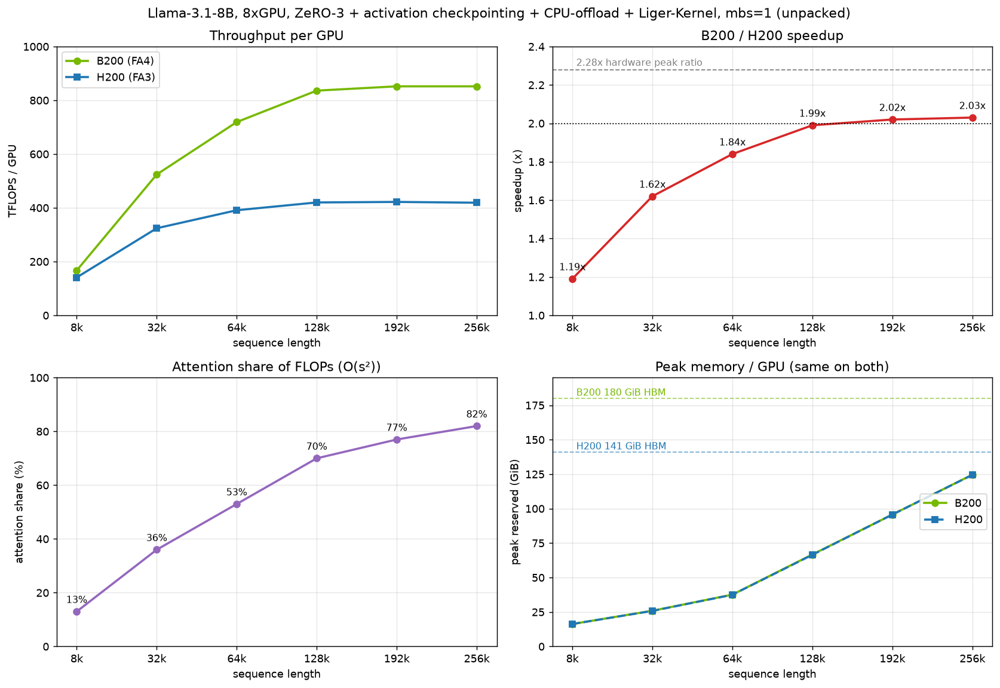

Getting Compute: Clouds, Clusters and When to Upgrade
Everything earlier in this book assumed you already had a machine to run on. This chapter is about getting that machine: deciding what hardware a workload needs, choosing between renting, sharing an HPC center and buying, negotiating a cloud contract that won't trap you, checking that the cluster you were given matches what you paid for, and deciding when a new GPU generation is worth paying for. Each of these is a decision worth millions of dollars, and a bad call can sink a team or a startup.
Most of the hardware facts behind these decisions have their own chapters already: accelerators in Accelerators, networks in Interconnects, storage in Storage and Data, FLOP counting and MFU in Training Arithmetic. This chapter doesn't repeat their tables. It links to them and adds the buyer's view: which numbers to ask for, which to measure yourself, and which to write into a contract.
Much of the material comes from Stas Bekman's years of training large models (BLOOM-176B, IDEFICS-80B and others) on HPC centers and on many clouds. Where something is his personal experience it is attributed to him; his recommendations are given as the chapter's recommendations.
What was run. The Python blocks with a file name were run with python3 (CPython 3.14) on an Apple M4 laptop; they need nothing but the standard library, and their output is pasted verbatim. They are arithmetic on stated inputs, not benchmarks. All GPU numbers in the upgrade section were measured by Stas Bekman on 8x H200 and 8x B200 nodes with the scripts in insights/when-to-upgrade-gpus/ and are quoted as measured; those scripts and every cluster-evaluation command in this chapter need GPUs and were not run while writing it. Prices in the examples are illustrative, not quotes.
Prerequisites
This chapter leans on almost everything before it. The most important ones:
- Accelerators: TFLOPS, the TFLOPS comparison table, MAMF and MSMF (the measured matmul ceilings), silicon lottery, Where you can get what, Software stacks and How to get the best price.
- Interconnects: intra-node (NVLink) and inter-node (InfiniBand, RoCE, EFA) networking, SHARP/NVLS, Real network throughput and Inter-node speed depends on intra-node speed.
- Measuring and Debugging the Network: torch-dist-bench, nccl-tests and
busbw. - Networking: leaf-spine and fat-tree topologies and RoCE.
- Storage and Data: parallel filesystems, metadata storms (why tiny files hurt), measuring storage with fio and rsync.
- Training Arithmetic:
6NFLOPs per token, MFU and HFU, the attention term, static memory per parameter, FP4 formats and the Transformer Engine. - Profiling and Optimization: TFLOPS as a performance metric, MFU vs HFU, where GPU memory goes and memory profiler tools.
- Model Parallelism: Derivations: ZeRO/FSDP, tensor parallelism and sequence/context parallelism.
- The GPU node software stack: DCGM and the node acceptance script.
- Fault Tolerance and Reproducibility: spare nodes and fixed allocations.
- Slurm from zero and Kubernetes from zero, especially Slurm vs Kubernetes.
- Inference Arithmetic: TTFT and TPOT, the user experience metrics.
Glossary
Terms used throughout the chapter that earlier chapters didn't define:
- CSP (Cloud Service Provider): a company that rents out compute - AWS, GCP, Azure, OCI, and many smaller GPU-focused clouds.
- Tier 1 / Tier 2 clouds: Tier 1 are the hyperscalers (AWS, GCP, Azure, OCI). Tier 2 are smaller, usually GPU-focused clouds, often called neoclouds. Compared in Tier 1 vs Tier 2 clouds.
- SLA (Service Level Agreement): the part of a contract that defines what quality of service the provider guarantees and what happens when it doesn't deliver.
- SLO (Service Level Objective): one quantified target inside an SLA, such as "99.5% monthly uptime".
- TCO (Total Cost of Ownership): everything a cluster costs you over its life - rent or purchase, power, cooling, staff, storage, egress, and the engineer time lost to problems.
- OEM (Original Equipment Manufacturer): the company that builds the servers, such as Dell, HPE or Supermicro.
- RMA (Return Merchandise Authorization): shipping a broken part back to the vendor for a replacement. It can take weeks.
- Burn-in: running a new batch of hardware under heavy load for days before handing it to customers, so that faulty parts fail in the provider's hands rather than yours.
- PM: the product or project manager a CSP assigns to your account; usually your first point of contact.
- HPC center: a High Performance Computing center - a supercomputer-style shared cluster, usually run by a government, a national lab or a university.
- Egress / ingress fees: the per-GB fees clouds charge for data leaving or entering a region.
What matters in the AI race
Before choosing hardware, be clear about what you're optimizing. For an AI company the hardware budget is in competition with everything else, including salaries.
What you are competing on
Training:
- How fast you can train a better model. Being first to market is an advantage.
- How much money it cost. Do you still have money left to pay your people after the training run?
Inference:
- Low latency. Users are used to millisecond responses and leave if a response takes seconds. In LLM-serving terms this is TTFT (time to first token) and TPOT (time per output token), see user experience metrics.
- High throughput: how many concurrent queries you can serve.
- Cost per user. Can you afford to rent more GPUs to acquire more users, or to improve (1) and (2)?
Time appears on both lists. That's why, later in this chapter, the cheapest option per token is not always the right one.
What LLM training needs
- Fast compute, massively dominated by matrix multiplications.
- Memory, IO, network and CPU fast enough to keep that compute fed.
The corollary: if you buy or rent the fastest accelerators but cheap out on any other component, you've wasted money, and you may lose the race because the training takes longer. The furnace section below shows why.
The workhorses
The accelerator does most of the work. GPUs were first because ML is massively parallel (SIMD - one instruction applied to many numbers, see SIMD). Now there are also TPUs, FPGAs, HPUs, QPUs, RDUs and wafer-scale engines - these are expanded in the Accelerators glossary. Recent CPUs are also used as accelerators, mostly for inference. The Accelerators chapter covers all of them.
Who drives AI
- AI companies train models, or build products around models trained by themselves or others, and do in-house research.
- Academia does massive amounts of research and writes papers. Lots of new ideas come from here.
- AI enthusiasts bring a lot of good will. Some pool resources and talent to train open-access models, with compute donated by HPC centers, an occasional cloud, or a university cluster.
- Entrepreneurs have lots of low-hanging fruit to pick: creative reselling of services, ML-driven apps, and ingenious combinations of available resources.
Information sharing
- Surprisingly, almost everybody in AI shares a lot of their discoveries with the community.
- Companies don't disclose all their IP, but a lot gets shared as knowledge or as model weights.
- Companies that publish a lot of IP and models tend to attract higher-quality talent.
- Twitter (X) has been the central place to follow what's going on. See FOMO and avoiding depression for how not to drown in it.
The AI bubble
- The Dot-com bubble happened in 1995-2000, and something very similar is happening in AI now.
- There is a lot of money available to create startups or grow existing companies. Raising millions of dollars is relatively easy.
- Because the industry is in its wild-west stage, the future is very hard to predict, so almost any startup idea goes, as long as it sounds reasonable.
- The difference from the Dot-com bubble is that a Dot-com company needed little money to operate - most of what it raised went to marketing and staff, barely any to compute. AI companies need millions because training LLMs takes an enormous amount of very expensive compute. For example, one NVIDIA H100 cost about $30k, and a company may need 512 of them: $15M, before the rest of the hardware and the running costs.
ML engineer's heaven and hell
Stas Bekman describes the environment he'd like to train LLMs and VLMs in, and the one he dreads. It's one person's experience - your mileage may vary - but it's a useful checklist of what to ask any provider, because each item on the "hell" list is something a contract or a careful evaluation can prevent.
Heaven
- A well-built HPC center, or a full-service cloud cluster, where someone diligently and promptly takes care of the hardware and systems. The ML engineer just brings the training software and trains - which is already an insanely complicated job requiring special skills.
- Lots of nodes available for exclusive, unlimited use.
- Fast inter-node connectivity that doesn't bottleneck the accelerators and isn't shared with other users.
- A huge, local, very fast NVMe-based shared filesystem that can hold datasets and checkpoints.
- Barebones Linux with Slurm and minimal software, enough to launch training jobs.
sudoaccess, to make working as a team easier.
Hell
- A cloud or in-house cluster where you have to do everything - sysadmin work, replacing hardware, dealing with outages - and train on top of that.
- A small, slow shared filesystem (NFS?), with a cloud object store to pull data from and checkpoint to.
- A slow inter-node network, leading to low accelerator utilization.
- An inter-node network shared with other users, which makes it erratic and unpredictable.
- A super-complicated cloud console with countless screens and steps to set up even simple things.
- Not being able to swap out failing hardware quickly.
- Having to timeshare nodes, with waits between training jobs.
- Other concurrent users who can fill the whole disk, crashing trainings.
- Not being able to kill jobs that others on the team started before going to sleep (the fix for this one is a team-wide kill switch).
Three ways to get compute
There are three main ways to get compute:
- Rent it on a cloud.
- Get a timeshare on an HPC center.
- Buy it.
Renting on the cloud
This is currently the most common way.
Pros:
- Easy to grow or shrink the cluster.
- Easy to move from an old hardware generation to a new one every few years.
- Cluster management can easily be outsourced.
Cons:
- Expensive, unless you negotiate a long-term (1-3 year) contract for hundreds of accelerators.
- You'll be tempted to buy many tools and services you may or may not need (see Don't buy what you don't need).
- You always get charged, whether you use the cluster fully or not.
Most of this chapter, from Choosing a cloud provider on, is about doing this well.
Using an HPC center
There aren't many HPC centers, so the resources available are limited.
Pros:
- Managed for you: all you need is your training software and a bit of Slurm know-how to launch jobs.
- Often sponsored by a government or university, so the job may cost much less or nothing. BLOOM-176B was trained for free on the Jean Zay HPC in France.
Cons:
- You timeshare with other teams: short job time limits with possibly long waits between jobs, which makes it hard to finish a training quickly.
- The inter-node network is likely to be less stable, because other teams use it too.
- You must follow the center's rules: no
sudo, and various others. - The cluster is what it is. You can't make the network faster, and even getting some software installed can be tricky.
Buying hardware
Mainly universities buy and build their own clusters, and some big companies do too.
Pros:
- If you can keep the hardware busy 24/7 for more than a few years, the total cost is lower than renting.
- Fast local storage is easy: a good NVMe RAID is much cheaper and faster than network storage.
Cons:
- A few years after purchase you're stuck with outdated hardware. You may be able to resell it.
- You must buy more than you need. Hardware breaks, especially under 24/7 load, and an RMA can take weeks.
- You must hire people to run it.
- You must sort out cooling, electricity, insurance and so on. The power and cooling numbers per card are in Power consumption and Cooling.
Whether "a few years" of 24/7 use is enough depends on your prices. A minimal break-even sketch, with every number an assumption you should replace:
# rent_vs_buy.py - months until owning beats renting. All inputs are assumptions.
gpus = 512
rent = 2.50 # $/GPU-hour, long-term contract
capex = 35_000 # $/GPU all-in: GPU, server share, network share
opex = 0.60 # $/GPU-hour: power + cooling + space + staff share
utilization = 0.85 # fraction of hours you actually keep the GPUs busy
spare = 1.10 # buy 10% more than you need to cover failures and RMAs
for u in (0.85, 0.5):
rent_per_month = gpus * rent * 730 * u # rent only what you use (on-demand-ish)
own_upfront = gpus * spare * capex
own_per_month = gpus * spare * opex * 730
months = own_upfront / (rent_per_month - own_per_month)
print(f"utilization {u:.0%}: break-even after {months:5.1f} months")
$ python rent_vs_buy.py
utilization 85%: break-even after 36.0 months
utilization 50%: break-even after 89.4 months
How to read this: at high utilization buying pays for itself in about 3 years under these assumptions - about the length of a long-term cloud contract, and about two GPU generations. At 50% utilization it takes over 7 years, by which point the hardware is obsolete. Note the model is generous to renting: a long-term contract bills you for every hour whether you use it or not, which the u factor ignores. The point is the shape, not the number: buying wins only when you can keep the machines busy, and you also inherit everything in the cons list.
Managing compute
Unless you use a fully managed HPC center, you need to hire a system administrator. It may feel like your ML engineers can handle it between training jobs, but they'll lose a lot of time to managing disk space, dealing with problematic nodes, asking users to behave, and so on. Good sysadmins who understand ML workloads are hard to find; System administration below covers outsourcing it to the provider or a service company.
The needs of the technology
Can you feed the furnace fast enough?
Picture a steam locomotive. The engine is great, but if the fireman can't shovel coal in fast enough, the train won't go fast.

This is the state of ML hardware: the bottleneck is moving bits, not computing on them.
- Accelerators get about 2x faster every 2 years (in the spirit of Moore's law).
- Network and memory don't keep up. Both are already bottlenecks for compute (the memory wall).
- IO can be another bottleneck if your DataLoader pulls data from the cloud.
- The CPU is fine as long as it has enough cores for the DataLoader workers and the main processes.
The corollary: research the whole machine, not just its engine.
A crazy idea that follows: older GPUs may do fine if you can actually feed them as fast as they compute. If you can get 3x as many of them for the price of the next generation, you might finish training sooner and cheaper. The upgrade section shows how to check this kind of claim with measurements.
From TFLOPS to days and dollars
Once you've picked the model architecture and size and the number of training tokens, you know how much compute the training needs: about 6ND floating point operations for N parameters and D tokens (Where 6N comes from; the attention term adds to it at long context). What remains is to compare providers on how many floating point operations per second (TFLOPS) their hardware does and what it costs per unit of time:
- Time to train:
total_flops_required / flops_per_second_of_the_cluster = time_in_seconds. Say it comes to 604800 seconds, i.e. 7 days. - Look up what this compute costs for 7 days, and you have the price of the training.
- Do the same for every other proposal and pick the best.
As the first section said, time matters a lot, so you might still choose the more expensive option if finishing sooner gets you to market first.
Unfortunately this math is only partly correct, because the advertised peak TFLOPS can't be reached in practice. The next section corrects it.
MFU corrects the estimate
Many vendors publish peak TFLOPS that are impossible to achieve (why is explained in Why the peak can't be reached). Model FLOPS Utilization (MFU) measures how well you actually use the accelerator:
- Count the floating point operations of one training iteration and divide by the seconds it took. That's your achieved TFLOPS.
- Divide achieved TFLOPS by the advertised TFLOPS. That's MFU.
For example, training in bf16: if one iteration needs 624 tera floating point operations and takes 4 seconds, you achieve 624/4 = 156 TFLOPS. A100 bf16 is advertised at 312 TFLOPS, so 156/312 = 0.5, i.e. 50% MFU. MFU and HFU, properly covers the details, including why recomputed activations don't count.
In practice:
- With NVIDIA GPUs, above 50% MFU on a multi-node setup with a large model is already doing fantastically.
- More efficient scaling techniques keep pushing MFU up.
- Slow networks, inefficient frameworks and untuned configurations push it down.
Now adjust the estimate: if the peak-based math said 7 days and MFU is 50%, the training takes 14 days. Here both steps are in one script, for a 70B model trained on 2T tokens on 1024 GPUs, comparing two hypothetical offers:
# cost_estimate.py - from "model + tokens" to days and dollars, first with peak TFLOPS, then with MFU.
N, D = 70e9, 2e12 # parameters, training tokens
total_flop = 6 * N * D # forward+backward FLOPs (6N per token)
gpus = 1024
offers = { # name: (peak dense bf16 TFLOPS per GPU, $/GPU-hour) - illustrative prices
"H100 @ $2.00": (989, 2.00),
"B200 @ $3.50": (2250, 3.50),
}
for name, (tflops, price) in offers.items():
for mfu in (1.0, 0.5, 0.4):
secs = total_flop / (gpus * tflops * 1e12 * mfu)
cost = secs / 3600 * gpus * price
print(f"{name} MFU={mfu:.0%} {secs/86400:6.1f} days ${cost/1e6:5.2f}M")
# the MFU of one measured iteration (the A100 example)
step_tflop, step_secs, peak = 624, 4, 312
achieved = step_tflop / step_secs
print(f"achieved {achieved:.0f} TFLOPS -> MFU {achieved/peak:.0%}")
$ python cost_estimate.py
H100 @ $2.00 MFU=100% 9.6 days $ 0.47M
H100 @ $2.00 MFU=50% 19.2 days $ 0.94M
H100 @ $2.00 MFU=40% 24.0 days $ 1.18M
B200 @ $3.50 MFU=100% 4.2 days $ 0.36M
B200 @ $3.50 MFU=50% 8.4 days $ 0.73M
B200 @ $3.50 MFU=40% 10.5 days $ 0.91M
achieved 156 TFLOPS -> MFU 50%
How to read this: the MFU=100% rows are the naive estimate; real runs land somewhere in the 40-50% rows. With these made-up prices the pricier GPU is both cheaper and more than twice as fast - but only if both reach the same MFU. A newer GPU often reaches a lower MFU at first, because its software is less mature; the worked upgrade example measures exactly that. Better still, replace the peak TFLOPS with the measured MAMF, which tells you what the hardware can actually do.
Moving bits
Why can't the advertised TFLOPS be reached? Because moving data takes time: between accelerator memory and the compute units, and even more from disk and from other GPUs into accelerator memory.
- Accelerator memory: its bandwidth is what it is. You can only write software that moves less data or moves it more efficiently - fused and custom kernels such as those generated by torch.compile, and FlashAttention (see the optimization ladder).
- Single GPU: if the model fits in one GPU's memory, the network doesn't matter and accelerator memory is the only bottleneck. Once you shard the model across GPUs, the network becomes the bottleneck.
- Intra-node network: very fast, but hard to use fully for large models. Tensor parallelism and sequence parallelism address part of this problem (more).
- Inter-node network: too slow on most server setups, so this is the key component to research. Efficient frameworks partly hide communication by overlapping it with compute, but if communication takes longer than compute it's still the bottleneck. More in Inter-node network below.
- Storage IO matters mainly for feeding DataLoader workers and saving checkpoints. More in Storage below.
- With enough DataLoader workers, the DataLoader usually adds very little overhead.
- While checkpoints are saved the accelerators sit idle unless you use async checkpointing, so fast IO is crucial here.
Key hardware components
This section is the buyer's tour of a training node. For each component it says what you need and links to the chapter with the full numbers.
Accelerators
As of 2026-08, the accelerators most commonly used for training, finetuning and inference:
Widely available:
- NVIDIA H200, B200, B300 (B300 systems are shipping).
- AMD MI325X, MI350X and MI355X - mostly on neoclouds, but large CSPs (AWS, GCP, Azure) have started offering AMD too.
- Intel Gaudi3 - on Intel's cloud and via OEM servers.
Available, but locks you in:
- Google TPUs - fast, but locked to one vendor and one cloud, and the software path is XLA rather than CUDA. Google appears to have started selling TPUs to some companies outside its cloud; this isn't officially confirmed, but if it holds it weakens the lock-in argument.
- AWS Trainium2 - on AWS, also XLA.
- Cerebras Wafer Scale Engine - on Cerebras' cloud.
Not yet available:
- NVIDIA Rubin - in full production and shipping to select enterprise customers (CoreWeave limited availability, Cognition running production workloads), but no self-serve cloud rental or public pricing as of 2026-10. The first hyperscaler general availability (Google Cloud A5X) is expected 2026-11.
- AMD MI455X - Helios volume deployments expected in the second half of 2026.
- SambaNova SN50 - shipping "in the second half of 2026"; SN40L is the current part.
- Intel GPU D-series / D270 (Crescent Island) - an inference GPU, launched at OCP 2026, customer sampling in the second half of 2026: 160GB LPDDR5X (ODM versions up to 480GB) at 1.5TBps, FP8 1.3 PFLOPS (the only published compute figure).
Regional:
- Huawei Ascend - real scale, but in practice China-only, and the specs are only on Huawei's Chinese pages.
"Announced" is not "available". The TFLOPS comparison table is split in two for exactly this reason: generally available parts first, then announced parts whose availability isn't confirmed. For the full list, per-vendor details and numbers see Where you can get what and Vendors and products.
Accelerator interoperability
Most (all?) accelerators are supported by the major frameworks like PyTorch or TensorFlow, and the same code should run everywhere with small changes, as long as it doesn't use accelerator-specific features. If your PyTorch program calls torch.mm, it should work everywhere; if it includes custom CUDA kernels, it only works on NVIDIA GPUs and maybe on recent AMD MI-series.
- NVIDIA GPUs: all based on CUDA, which most training frameworks support. You can move between NVIDIA GPU generations easily and most things work the same.
- AMD MI250/MI3xx: with PyTorch on ROCm you can run most CUDA-based software as is. This is really the only accelerator that interoperates with the NVIDIA stack.
- Intel Gaudi2/Gaudi3: with HF Transformers/Diffusers you can use optimum-habana. If you use the HF Trainer on NVIDIA GPUs, switching to Gaudi should be relatively easy.
- Google TPU and AWS Trainium: both via XLA. PyTorch works, custom CUDA kernels don't.
- Huawei Ascend: via CANN, with MindSpore first-party and a PyTorch adaptation alongside it.
- Cerebras: working on PyTorch support via its Cerebras Software Platform (CSoft) via XLA.
Most ML code can also be exported to cross-platform formats like ONNX (Open Neural Network Exchange), which runs on many accelerators. This is mostly used for inference.
A quick portability audit of your own codebase tells you how locked in you already are. Anything that matches below won't run on a non-CUDA accelerator without porting:
# find CUDA-only code: custom kernels, extensions, vendor libraries
grep -rnE "load_inline|CUDAExtension|\.cu\b|(import|from) (triton|apex|flash_attn|transformer_engine)|cupy" \
--include='*.py' --include='setup.py' --include='*.toml' . | head
Run inside this book's insights/when-to-upgrade-gpus/ folder (the upgrade benchmark used later in this chapter), it finds the two FlashAttention imports:
bench_flash_attn.py:17: from flash_attn_interface import flash_attn_func
bench_flash_attn.py:20: from flash_attn.cute import flash_attn_func
How to read this: each hit is a line that ties the code to NVIDIA (here FA3 for Hopper and FA4 for Blackwell). Zero hits means plain PyTorch, which should move to AMD with little work and to XLA devices with more. Many hits in your model code means a switch of vendor is a porting project, which belongs in the cost of any non-NVIDIA offer.
Triton (which torch.compile also generates) is a partial exception: it supports AMD GPUs as well as NVIDIA, but not XLA devices. Software stacks shows how to tell from Python which backend you're on.
Network
If a model doesn't fit in one accelerator's memory, you rely on the intra- and inter-node networks to keep multiple accelerators in sync. The biggest problem today is that compute improves faster than networking. For NVIDIA NVLink (intra-node, unidirectional bandwidth):
| GPU | Compute fp16 TFLOPS |
Compute speedup |
Intra-node GBps |
Intra-node speedup |
|---|---|---|---|---|
| V100 | 125 | 1 | 150 | 1 |
| A100 | 312 | 2.5 | 300 | 2 |
| H100 | 989 | 8 | 450 | 3 |
| B200 | 2250 | 18 | 900 | 6 |
| Rubin | 4000 | 32 | 1500 | 10 |
How to read this table: from V100 to Rubin, compute grew 32x but NVLink only 10x. A100 was 2.5x faster than V100 and H100 about 3x faster than A100, while NVLink grew by only 150GBps per generation until NVLink 5.0 doubled the speed over NVLink 4.0, catching up a little. It's still not enough. So every generation, a model needs relatively more compute per byte communicated to keep the GPUs busy.
Each NVLink generation raised the per-lane bandwidth (per direction; each link is made of several lanes - see the NVLink section): 2.5, 3.125, 6.25 and 12.5 GBps for NVLink 1-4, then 25 GBps for NVLink 5. Most generations also added links, so per-GPU bandwidth climbed from 80 GBps (P100) to 450 GBps (H100) to 900 GBps (B200).
The inter-node story is similar: most NICs do 100 or 200Gbps, with 400Gbps emerging (12.5, 25 and 50 GBps). Some systems install many NICs per node to get higher totals.
With LLMs the payloads are so large that network latency is usually negligible for training. It still matters a lot for inference.
Intra-node network
- Pay attention to bytes vs bits: 1 byte = 8 bits, so 1GBps = 8Gbps (Units).
- When you reduce data (e.g. gradients) across nodes, the slowest link - inter-node - sets the overall throughput, although hierarchical algorithms can sometimes speed things up by using the faster intra-node bandwidth.
- Tensor parallelism and sequence parallelism have to stay inside a node to be efficient (Why TP stays inside NVLink); they only make sense with fast intra-node links.
NVIDIA nodes have plenty of NVLink bandwidth: 1500GBps (12Tbps) unidirectional for Rubin, 900GBps (7.2Tbps) for B200/B300, 450GBps (3.6Tbps) for H100/H200, 300GBps for A100.
Intel Gaudi2 does 300Gbps card-to-card (100GbE RoCE v2 RDMA; the same NICs also serve inter-node).
All the details are in Intra-node networking.
Inter-node network
- You'll see a wide range of speeds, from 200Gbps to 6400Gbps per node.
- Inter-node links are still about an order of magnitude slower than intra-node ones - for example 50GBps per accelerator of EFA v4 on an AWS P6-B200 instance vs 900GBps of NVLink 5. But the practical gap is much smaller, because an inter-node collective also does most of its data movement over the intra-node links: a 4GiB
all-reduceacross 4 nodes measures only about 2x slower than on one node, not 18x. See Inter-node speed depends on intra-node speed. - You need to reduce gradients and other tensors (e.g. MoE token exchanges) faster than you compute, or the accelerators idle.
- Expect at most about 80% of the advertised speed. If you're told 800Gbps, expect about 640Gbps.
All the details are in Inter-node networking.
Storage
An ML workload has three distinct storage needs:
- Feeding the DataLoader - very fast reads, writes don't matter. The load is sustained for hours and days.
- Writing checkpoints - very fast writes, fast-ish reads (you'll resume a few times). The load is bursty, and you want the burst to be fast so it blocks training only briefly, unless you offload the checkpoint to CPU memory first and write it asynchronously.
- Loading and maintaining your codebase - medium speed for both reading and writing. This must be shared so all nodes see the same code. It's accessed only at start and resume, so infrequently.
Two warnings:
- You're often sold 80% of what you paid for. If you need a reliable 100TB, rent 125TB, or your application may fail to write long before the disk is "full". Guaranteed maximum capacity explains why.
- For the shared distributed filesystem:
- Non-parallel shared filesystems can be extremely slow with lots of small files - which is what Python is (Metadata storms).
- You want a parallel filesystem such as GPFS (IBM Spectrum Scale) or Lustre (open source), see How a parallel filesystem works.
The mechanisms and the benchmarking tools are in Storage and Data.
CPU memory
You need enough CPU RAM for:
- 2-3 DataLoader workers per accelerator, so 16-24 processes on an 8-accelerator node.
- Even more for those workers if they pull data from the cloud.
- Loading the model, if you can't load it directly onto the accelerators.
- Offloading accelerator memory: CPU RAM extends GPU memory by holding layers or optimizer state that aren't needed at the moment (ZeRO-Offload, FSDP CPU offload). If that's your plan, the more RAM the better.
CPU
Usually the least worrying component.
- Most clouds provide beefy CPUs with plenty of cores.
- You need enough cores to run 2-3 DataLoader workers plus 1 main process per GPU: at least 30 cores on an 8-GPU node.
- Even more cores if your data transforms are complex or slow (common in computer vision).
- Most of the compute happens on the GPUs.
Pinning those processes to the right cores matters too: see NUMA affinity.
Instant ML math: how many GPUs in five seconds
Two formulas you can do in your head in a meeting:
- Training with bf16 mixed precision and AdamW:
model_size_in_B * 18 * 1.25 / gpu_size_in_GB - Inference in bf16:
model_size_in_B * 2 * 1.25 / gpu_size_in_GB
That's the minimum number of GPUs; you need more for a bigger batch size and longer sequences. The pieces:
- Training, 18 bytes per parameter: 8 bytes of AdamW state, 4 bytes of gradients, 4+2 bytes of weights (fp32 master copy plus bf16 working copy). The derivation and the variants are in Static, per parameter.
- Inference, 2 bytes per parameter for bf16 weights (1 byte with 8-bit quantization).
- 1.25 adds 25% for activations (and, for inference, the KV cache). This is very, very approximate. Activation memory and KV cache sizing do it properly.
# gpus_needed.py - the 5-second "how many GPUs" estimate.
import math
def gpus(model_b, gpu_gb, bytes_per_param, activations=1.25):
return model_b * bytes_per_param * activations / gpu_gb
for model_b, gpu_gb in [(80, 80), (8, 80), (70, 141), (405, 180)]:
t = gpus(model_b, gpu_gb, 18) # train: 4+2 weights, 4 grads, 8 AdamW
i = gpus(model_b, gpu_gb, 2) # bf16 inference
q = gpus(model_b, gpu_gb, 1) # 8-bit quantized inference
print(f"{model_b:>4}B on {gpu_gb:>3}GB GPUs: train >= {math.ceil(t):>3} ({t:6.2f})"
f" infer bf16 >= {math.ceil(i)} ({i:.2f}) infer 8-bit >= {math.ceil(q)} ({q:.2f})")
$ python gpus_needed.py
80B on 80GB GPUs: train >= 23 ( 22.50) infer bf16 >= 3 (2.50) infer 8-bit >= 2 (1.25)
8B on 80GB GPUs: train >= 3 ( 2.25) infer bf16 >= 1 (0.25) infer 8-bit >= 1 (0.12)
70B on 141GB GPUs: train >= 12 ( 11.17) infer bf16 >= 2 (1.24) infer 8-bit >= 1 (0.62)
405B on 180GB GPUs: train >= 51 ( 50.62) infer bf16 >= 6 (5.62) infer 8-bit >= 3 (2.81)
How to read this: the first row is the classic example - an 80B model on 80GB GPUs needs at least 23 GPUs to train and at least 3 to serve. The number in parentheses is the raw quotient; round up. In practice you then round to whatever your parallelism layout allows (for example a multiple of 8 for whole nodes), and add room for batch size. If the answer is "fewer than one node", the next question is whether you even need a cluster. More on memory in Where GPU memory goes.
Choosing a cloud provider
Choosing a cloud deserves the utmost care, especially for a long-term contract. You can end up in a 3-year lock-in, paying millions of dollars for a terrible experience with no way out. For perspective: a 64-node cluster can easily cost $20-50M over 3 years, often more than a startup pays in salaries. A bad 3-year contract can prevent a startup from succeeding.
Stas Bekman has used many compute clouds, over long and short terms, and has sat through many "discovery" calls (the sales-led meetings where a provider pitches its cluster). This section doesn't tell you which clouds to avoid. It gives you the questions that let you avoid a bad experience and get at least a decent one.
It assumes you already know what compute your workloads need - if not, the Accelerators, Interconnects and Storage and Data chapters cover what's out there. Most of the time you want the latest the clouds offer.
Three numbers frame the negotiation - the size of the commitment, the cost of spare nodes, and what an SLA credit is actually worth:
# contract_math.py - three numbers to put in front of a cloud sales team.
nodes_needed, gpus_per_node, price = 64, 8, 2.50 # $/GPU-hour, illustrative
hours = 3 * 365 * 24
print(f"3-year cost of {nodes_needed} nodes: ${nodes_needed*gpus_per_node*price*hours/1e6:.1f}M")
# 1. spare nodes: ~10% on top, used for dev work until a node dies
spare = round(nodes_needed * 0.10)
print(f"rent {nodes_needed + spare} nodes ({spare} spare) -> +${spare*gpus_per_node*price*hours/1e6:.1f}M over 3 years")
# 2. storage you can actually fill: Lustre-like FS may fail writes at ~80% full
need_tb = 100
print(f"need {need_tb}TB usable -> provision {need_tb/0.8:.0f}TB")
# 3. SLA credit: e.g. 10% credit for 99-99.5% monthly uptime, 25% for 95-99%
def credit(uptime):
return 0.0 if uptime >= 99.5 else 0.10 if uptime >= 99.0 else 0.25 if uptime >= 95.0 else 1.0
monthly = nodes_needed * gpus_per_node * price * 730
for up in (99.7, 99.2, 97.0):
lost_h = (1 - up / 100) * 730
print(f"uptime {up}%: {lost_h:5.1f}h down, credit {credit(up):.0%} = ${monthly*credit(up)/1e3:,.0f}k of ${monthly/1e3:,.0f}k")
$ python contract_math.py
3-year cost of 64 nodes: $33.6M
rent 70 nodes (6 spare) -> +$3.2M over 3 years
need 100TB usable -> provision 125TB
uptime 99.7%: 2.2h down, credit 0% = $0k of $934k
uptime 99.2%: 5.8h down, credit 10% = $93k of $934k
uptime 97.0%: 21.9h down, credit 25% = $234k of $934k
How to read this: $33.6M for 64 nodes at an illustrative $2.50/GPU-hour sits inside the $20-50M range above. The spare nodes and the storage over-provisioning are explained in Dealing with accelerator failures and Guaranteed maximum capacity. The SLA rows show why the definition of "uptime" matters more than the credit percentages: if a whole-cluster outage of 22 hours only earns a 25% credit, the remaining 75% of a lost day is yours - plus the engineer time and the restart. And if one dead node out of 64 doesn't count as "down" at all, the SLA covers nothing you care about. Service Level Agreement covers what to negotiate.
The three most important questions
In Stas Bekman's experience there are three questions you absolutely need answered:
-
Your GPUs will fail - guaranteed. How quickly are they replaced, and what's the procedure? If you have to reach a human for each replacement, it will be slow and painful. The best CSPs give you an API to do it yourself. Also beware of "Humpty Dumpty" GPUs: returned to you without actually being replaced, because when the technician checked them they appeared fine - but they fail again as soon as you use them. To catch this, record every GPU's serial number and UUID when you report it, and compare when the node comes back:
nvidia-smi --query-gpu=index,serial,uuid,pci.bus_id --format=csv,noheader >> gpu-inventory-$(hostname).csvIf the serial of the GPU you reported is still in the node, it wasn't replaced. The GPU node software stack chapter covers logging GPU UUIDs with every acceptance run for exactly this reason.
-
You'll hit many problems, mostly hardware. How quickly can you reach an engineer who can fix them? Normally your reports go to a PM, who triages them and tries to find the right person. That often takes hours or days and sometimes needs escalation, especially if the PM isn't very experienced.
-
Can you break the contract - how quickly, and at what cost? Things can get really bad for your team. If you can't walk away, burnout for one or more people is guaranteed, and so is damage to your ability to make progress.
Contracts
If you pay per hour, you don't need to worry about contracts. But it's a bad long-term strategy: you pay many times more and you don't get a steady, reliable pool of accelerators. A long-term contract, with a good negotiator, can save as much as 10x in TCO (and time). How to get the best price covers the negotiation itself; this section covers what to put in the contract.
Free trials
Most CSPs have trial programs where you can "kick the tires" on a few nodes for a few days or weeks, for free. It won't tell you how a larger cluster scales, but it's enough to run quite a few benchmarks and experiments (How to evaluate a cluster gives the plan). It's also a good chance to see how the provider's customer support works, if support is included in the trial.
Half-baked solutions
A new accelerator generation arrives roughly every 12-18 months, and customers want it "yesterday" to get ahead of competitors. That leaves CSPs almost no time to integrate the new hardware, test it, adapt their software stack and burn the components in.
So if you want the latest generation as soon as it's available, you're almost guaranteed a bad experience: getting things right takes months. Customers rule, so CSPs give them what they ask for, often without saying that it isn't quite ready.
CSPs aren't necessarily to blame. They often receive the hardware months after the manufacturer promised it, by which time they can't keep their own promises, so they deliver what they have.
Some CSPs also build their own hardware, such as a custom network stack, for better margins, and then fail to finish it in time: the latest accelerators are there but the whole system limps. Off-the-shelf components are safer, since they're most likely well-tested (though they probably cost more).
It's fine to want the hardware early. What you should expect is honest disclosure, as in: "we need about 3 more months to make this solid; you can have the nodes now, but we can't guarantee anything." Ask for it explicitly.
The "we will do our best" clause
Many long-term cloud contracts contain "we will do our best" or "we will make a reasonable effort to ..." clauses. Yet:
- The customer isn't allowed to "do their best" to pay. They're legally obliged to pay the agreed amount, on time.
- The customer isn't allowed to leave before the term ends.
When did you last go to the bread section of a supermarket and find a lump of half-baked dough with a note: "we made a reasonable effort to bake this bread, but alas, what you see is what you get"? Yet for some reason it's acceptable to sign a contract in which the provider commits to neither delivery dates nor performance, and says nothing about what it will do when it fails. If a contract has no clear deliverables (time and performance), don't be surprised if you pay for something you don't receive when you need it, or at all.
In Stas Bekman's experience, Tier 1 clouds demonstrate "doing their best" by sending 10+ people to meetings with the customer. Some of them are clueless and are there to make the company look resourceful: "look, we've allocated 10+ people to your problem, nothing to worry about." Most of the time those people can't solve your problem. What you need is two people on the call: a product manager and the engineer directly responsible for fixing the problem. In his experience such a meeting can take weeks or months to happen, or never happen, and usually requires good connections to escalate to "top brass".
So: every critical component you buy needs a quantifiable delivery metric. For example, if the network is supposed to run at X GBps doing all-reduce across N nodes and you measure significantly less, the contract should say what the CSP does then. The same goes for storage, accelerators and any other component you depend on. You negotiate the specific consequences, but probably the best one is that you stop paying until the problem is fixed - that gives the provider an incentive to fix it. Not paying helps, but not being able to use the compute is still a big problem, and breaking the contract and migrating to another provider is a huge undertaking. At least it gives you something you can do.
It's almost never the engineers' fault - they're very often amazing, experienced people. It's usually management and resource allocation. Be as gentle as you can with the people you deal with while firmly demanding a resolution. Stas admits this is hard: more than once he was at the end of his rope and couldn't always keep his cool.
Service Level Agreement
A Service Level Agreement (SLA) is the agreement between provider and customer that defines guarantees and expectations about service quality and availability, and who is responsible for what. An SLO quantifies it. For example, an SLO may set Monthly Uptime Percentage at 99.5%; if uptime falls below that, the provider credits the customer a percentage of what they spent - say 10% for 99-99.5% uptime, 25% for 95-99%, and so on. GCP's SLA is an example.
When renting ML clusters, the main category to care about is failing accelerators and whole nodes. If you paid for 64 nodes but could only use 60, you should be credited for the 4. The SLA should define how long a node can be down before the provider starts paying you back, and how much.
The same goes for network and storage. They fail much less often than accelerators, but they do fail. In general, every critical part of the service should have an SLO and clearly defined consequences when it's missed.
Most Tier 1 providers include their standard SLAs in the contract. In theory you can negotiate them to fit your needs, though not always. Sometimes offering to pay more gets you a better-than-standard SLO.
A contract-breaking clause
Both sides should be able to have a mutually beneficial business relationship. So it's critical that you can legally exit the contract if your experience isn't beneficial because the other side fails to meet the agreed expectations - without a legal battle, which is very expensive, and which you may well lose: Tier 1 clouds can afford the best lawyers. Negotiate up front the circumstances under which the contract can be cleanly exited before its term ends.
Paid support must be included
Stas Bekman reports that at one company he worked at, the cloud contract didn't include paid support - it was skipped to save money - and the only support was a customer chat. They lost days of compute because of it.
Don't save money here. You'll lose much more in money, developer time and hair. Make sure you can submit tickets with priority labels, and that the contract defines how quickly each priority will be handled. A customer chat has zero obligation to do anything about an urgent problem, or to do it in a timely manner. If you deal with PMs, find out how quickly you can talk directly to the engineer who can fix the problem, removing the middleman.
Support during off-hours
Do you get human support for emergencies on weekends, holidays and nights? On one HPC center Stas used, human support was only available Monday to Friday, 9 to 5.
If it isn't available, at the very least make sure your team can resuscitate the cluster itself - and run a drill to confirm it actually works. That requires an API for everything you'd otherwise ask the provider's support to do.
Next-generation accelerator migration
A new accelerator generation comes out about every 12-18 months, but a typical contract runs 3 years. So for about half the contract you'll be using an inferior product. Nobody wants a 2-5x slower accelerator when a much faster one exists, but most customers are stuck with the old ones for the full term. Negotiate the right to move to the new generation before the end of the term - which will obviously cost extra. When is it worth upgrading GPUs shows how to decide whether to use that right.
Keep all accelerators in the same region
If you want new accelerators early, they very often won't be available in the region where your current ones are. Unless you drop the old allocation entirely and move to the new region, you'll be maintaining multiple copies of your storage, because for performance the storage must be where the accelerators are. You then have to keep those copies in sync and pay potentially huge ongoing egress and ingress fees. Plan for it: ask the CSP to move your older-generation allocation into the region where the new generation is. That isn't always possible, and you may have to wait until more accelerators free up, but it's an important clause to discuss. Region migration covers the storage side.
Accelerator questions
This group of questions is specific to accelerators.
Accelerators need to be burned in
When a new batch of hardware arrives, the provider should "burn it in" before handing it to customers: run extensive stress tests to find faulty accelerators and other faulty components.
If that isn't done, you discover the bad apples the hard way, while running your workload, losing compute and developer time. With a few nodes, one failing accelerator usually isn't a big deal; with dozens or hundreds of nodes, every failure stops the whole job and the cost is huge. It shouldn't be the customer's job to find bad accelerators. Nothing guarantees an accelerator won't fail after a stress test, but it should be rare. Otherwise a new batch often has a 3-10% failure rate, which is huge and very costly for the customer.
So ask your provider how long they burned in your systems, if at all. There's no golden reference point yet, but SemiAnalysis suggests the OEM performs a 3-4 week burn-in and then the CSP runs another 2-3 day burn-in/acceptance test. If that's the norm, make sure your systems were stress-tested for at least 2-3 days.
Nothing stops you from doing your own burn-in with a large real training run, if you don't mind stopping and restarting on failures: if it works, you've made progress. Make sure it stresses every part of the system in a sustained way - compute, memory, NVLink, the inter-node network and storage. The node acceptance script is a shorter, structured version of the same idea.
How much does a 3-10% failure rate matter? It depends on how many accelerators one job touches:
# burnin.py - chance a job's allocation contains at least one bad GPU.
for rate in (0.001, 0.01, 0.03, 0.10):
row = []
for gpus in (8, 64, 512):
row.append(f"{gpus:>3} GPUs: {1 - (1 - rate) ** gpus:6.1%}")
print(f"per-GPU failure rate {rate:5.1%} -> " + " ".join(row))
$ python burnin.py
per-GPU failure rate 0.1% -> 8 GPUs: 0.8% 64 GPUs: 6.2% 512 GPUs: 40.1%
per-GPU failure rate 1.0% -> 8 GPUs: 7.7% 64 GPUs: 47.4% 512 GPUs: 99.4%
per-GPU failure rate 3.0% -> 8 GPUs: 21.6% 64 GPUs: 85.8% 512 GPUs: 100.0%
per-GPU failure rate 10.0% -> 8 GPUs: 57.0% 64 GPUs: 99.9% 512 GPUs: 100.0%
How to read this: each cell is the probability that a job spanning that many GPUs includes at least one bad one, assuming failures are independent. At the 3% rate of an un-burned batch, a 64-node (512 GPU) job is certain to hit bad GPUs, and probably many: the expected count is 0.03 \times 512 \approx 15. That's why burn-in is the provider's job - and why spares matter.
Dealing with accelerator failures
In Stas Bekman's experience, other components do fail occasionally, but 95% of the time it's the accelerators. So you need a very clear and quick path to replacing one.
Ideally it's automated: ask whether there's an API to release a broken node and get a replacement. If you have to ask a human, it usually doesn't work well. The more automated, the better the experience.
Ask how many accelerators are in the provider's backup pool for you. Providers usually commit to a number of fast replacements per month.
That said, if time matters to you, always pay for about 10% more nodes than you need, because you usually won't get instant replacements. The extra nodes can be used for development, and when a node fails during training you swap in one of your own immediately. Always plan to have more nodes than needed covers how the training side uses them.
All your nodes on the same network spine
Unless you rent 10k GPUs, a smaller cluster can easily sit under one network spine (the top tier of switches in a leaf-spine fabric, see Top-of-rack, leaf-spine, fat-tree), so that inter-node traffic takes the same time between any two nodes.
Make sure the backup nodes - the ones you don't pay for but that cover failures - are on the same spine as the nodes you pay for. If not, multi-node training gets a big problem: that one replacement node is further from all the others and slows the whole ensemble down, because a synchronous job runs at the speed of its weakest link. See also Node Proximity.
Keep your good accelerators on reboot
You want a fixed allocation: if nodes need to be re-deployed, especially during planned downtime, other customers must not be able to grab them. Once you've spent weeks filtering out the bad nodes, it's crucial to keep the good ones and not start the painful and expensive filtering again. Preferring fixed accelerator allocations to dynamic ones covers this from the training side.
Do you think you will need to expand?
This is hard, because you can't know in advance whether you'll need more nodes. Ideally, discuss it with the provider so they can plan for your expansion. Otherwise, say you want to double your nodes, but the only free ones are on a different network spine - that hurts training speed.
Chances are you'll have to drop your current allocation and move to a bigger one, possibly in a different region if there's no local capacity. Moving regions can be very slow and expensive, because the storage must move with the cluster. Stas Bekman's advice, from personal experience: don't take this lightly.
Storage questions
Large, fast storage matters both for a good developer experience and for fast training, finetuning and inference - in particular for loading and saving checkpoints.
Guaranteed maximum capacity
Ask how much of the storage you pay for is actually usable. With Lustre, for example, you have to over-provision by 25% to get the capacity you need, because Lustre can fail to write at about 80% total capacity due to how it balances data across disks. The customer pays for the extra 25%. (The usual mechanism: a file lives on specific storage targets - see Lustre: MDS, OSS and lfs setstripe - so writes fail as soon as one target fills, even if the filesystem as a whole has free space.)
Most other filesystems Stas has used reach 100% without failing, but always ask about the specific filesystem you'll get.
Know your storage IO requirements
Stas Bekman reports that one cloud they used had a non-parallel distributed filesystem and the developer experience was terrible. Large files were acceptable, but small files were extremely slow: installing a basic Conda environment took 30 minutes and python -c "import torch" took 2 minutes. Python consists of tens of thousands of 4-16KB files, and if the filesystem isn't optimized for them and its metadata servers are weak, every import turns into thousands of slow metadata operations (Metadata storms).
A typical Python shop needs a filesystem that handles both:
- tens of thousands of tiny files, and
- a few huge files.
Only you know your workloads' specific requirements. Also consider how local and shared storage relate: some providers shrink or slow down the local drives to save money. Developers often read code, models and datasets from the shared filesystem that could be cached locally. Teaching people to rsync them to local NVMe improves the developer experience and reduces load on the shared filesystem.
Two quick probes for the tiny-files problem, to run on the shared filesystem during a trial [untested here; needs the cluster]:
cd /shared/fs/scratch/$USER
time python -c "import torch" # seconds on local NVMe; minutes means trouble
time (python -m venv v && v/bin/pip install -q numpy) # many small-file writes
Separate volumes by workload where you can (advice from Ross Wightman): keep the high-churn, many-small-files data (environments, code, package caches) apart from bulk storage (datasets, checkpoints), and possibly split those too, since datasets are mostly static while checkpoints are written and rotated all the time. A distributed filesystem can't be treated like a local disk, and when high-churn small files and low-churn large files don't share a volume, you can usually use a much higher percentage of the capacity you pay for. DLIO, Argonne's benchmark that emulates the IO pattern of deep learning training, is one way to test a candidate volume with a realistic workload.
The full benchmarking procedure is in Measuring storage and the Storage section of How to evaluate a cluster.
What happens when storage fails
With advanced, expensive distributed filesystems failure is relatively unlikely; with cheaper solutions it's quite likely. Either way it can happen, and you need to know:
- Who is in charge of fixing it?
- How long will recovery take?
- Who pays for the downtime?
- What do users do while it's broken?
If recovery takes a long time, you often need a temporary filesystem partition so people can keep working - and you'll pay for it.
Region migration
A cluster may be forced into a different region when upgrading to a new accelerator generation or expanding, if your region doesn't have what you need. The storage must be in the same region as the accelerators, so this triggers a storage migration, which is sometimes very painful. Ask these questions long before it starts:
- Is the provider responsible for moving your data, or are you?
- Is the provided tooling good enough to move TBs of data in a few hours, or will it take many days? For example, migrating via a storage cloud typically drops all file metadata (permissions, ownership, timestamps), which can be a huge problem. 5 million tiny files can take forever to copy file by file. You can
tarthem first, but that takes hours too - and do you have room for two copies of your data? - Do you pay for storage and compute of both clusters while they overlap?
- What happens to files being edited and created during the move? Do you send everybody home and freeze the filesystem?
Moving data between sites has the transfer-time arithmetic and tools.
Backup and archive
Many CSPs offer only one tier of file storage at one price. But organizations need several: for example, you may want to archive old checkpoints or finetuning datasets to cheap cold storage such as S3 objects on HDD. Being able to expand capacity and keep "hot" (local NVMe), "warm" (shared NVMe), "cold" (shared HDD) and "archive" (tape) tiers in sync improves resilience, saves money, and makes migration and expansion easier.
Network questions
This part matters mostly for training and finetuning. If you rent accelerators for inference via large deployments of microservices, or for small on-demand interactive work (notebooks), you can safely skip it - unless you serve models so big that a single replica needs more than one node.
In general, make sure the offered intra-node and inter-node speeds match the promise and your expectations. When you measure, ask which NCCL environment variables the platform needs; a safe default is NCCL_NVLS_ENABLE=2, which uses NVLink SHARP when available (NVLS is explained in SHARP).
Ask for the actual performance numbers
Compute theory never matches reality, and reality can vary dramatically between providers even with identical components, because it depends on the quality of every part and on how well the racks were designed and put together.
The easiest ask is an all-reduce benchmark plot over 4, 8, 16, 32 and 64 nodes (more if your cluster is bigger). Bandwidth should degrade gradually with more nodes, but not dramatically; some networks become very inefficient at higher node counts. See Real network throughput.
Ideally benchmark a few payload sizes - the ones you know your workload's collectives use. Stas usually starts by asking for a plot at a big payload, 4-16GiB (16GiB gets the best bandwidth on the newest, fastest inter-node networks), which immediately tells him whether the network is good. You'll very likely also want 256-512MiB, so ask for the wider range.
The most practical approach he has used is to ask the CSP for their own nccl-tests all-reduce numbers, on 1 node and on 4-16 nodes. Every provider wants to put its best foot forward, so what comes back is their best case - which is exactly what you want, because it becomes the number you hold them to in the SLA. Ask around whether those figures look right for that hardware; in his experience they usually do. Once you have the nodes, run the same benchmark yourself: those are the numbers you should reproduce. If you can't, something about your allocation differs from what they demoed, and now you have a specific, quantified thing to escalate instead of a vague complaint that the network feels slow.
Ask for these numbers up front, not while negotiating the SLA. By then it's too late, and they have no incentive to show you their best case.
He has yet to see NVLink perform differently between providers (unless it's misconfigured in software), but ask for the single-node benchmark too.
Does the network steal accelerator memory?
Stas Bekman reports that on one cloud, when they started using the GPUs, they found 5GiB of each one already used by the networking software. They managed to reduce it, but they'd still been sold GPUs with less memory than advertised, and nobody had told them before they signed. As accelerators get bigger this matters less, but getting 75GiB of usable memory instead of 80GiB on an H100 is a huge loss per GPU. Check with nvidia-smi --query-gpu=memory.used,memory.total --format=csv on an idle node with no processes running: memory.used should be a few hundred MiB at most, not several GiB.
InfiniBand or Ethernet?
CSPs generally follow NVIDIA's DGX SuperPOD Reference Architecture, which details how to build a rail-optimized InfiniBand network. Rail-optimized means each GPU in an 8-GPU node connects to its own leaf switch; everything else is a standard fat-tree (both explained in Top-of-rack, leaf-spine, fat-tree).
However, many of the largest GPU clusters now run RoCEv2 instead of InfiniBand. Meta has shown that you can train frontier-class Llama models on RoCEv2. SemiAnalysis/Fabricated Knowledge show a significant drop-off in NVIDIA's networking attach rate (the share of NVIDIA GPU purchases that also buy NVIDIA's own InfiniBand networking).
Since multi-node training depends on network collectives (NCCL or RCCL), the type of network can significantly affect performance and user experience. Either can be good; judge it by the measured numbers above, not the label.
Security
Security is sometimes an afterthought, and CSPs' approaches vary widely. A SOC 2 Type 2 certification (an independent audit report attesting that a provider's security controls actually operated over a period of several months) may not be enough. Check:
- Whether the machines you'll use are virtualized. If you're on bare metal and the provider serves other tenants, you can't know what was done on that machine before you got it (Hardware virtualization explains what a VM isolates).
- That the provider verifies known-good versions of BMC firmware (the baseboard management controller, the out-of-band management chip), system firmware and BIOS before provisioning, or re-provisioning, a server for you.
Tier 1 vs Tier 2 clouds
Stas Bekman doesn't have a clear recommendation yet. His intuition is that Tier 2 clouds are likely to provide better and more personal support, because they have to work harder to win customers.
On price, Tier 2 clouds are generally cheaper, or they couldn't compete. But their margins are much thinner, because they lack Tier 1's volume buying power.
Tier 2 clouds are also more likely to be flexible, to offer non-mainstream accelerators (AMD, Intel), and to help tune things at little or no cost.
Orchestration
Well-oiled node orchestration is critical for using multi-node clusters. Know which one you need - usually Slurm, Kubernetes, or both - and make sure it's well supported. Some clouds support only one, or offer very limited support for the other. These days Slurm is mostly used for training and finetuning and Kubernetes for inference (Slurm vs Kubernetes); there are also other orchestration platforms.
As with hardware, if you won't administer the cluster yourself, know who handles problems. Orchestration is a crucial component: when it's broken, nobody can use the cluster and you lose time and money.
Up-to-date software and OS versions
Make sure the provider won't force you onto old software or an old operating system. Stas Bekman has been forced to use very old Ubuntu versions because the provider's software stack, which they had to use, didn't support newer ones. An old OS often means an old kernel and an old driver branch, which caps the CUDA version you can run (The four rules).
System administration
It can be hard to find a good system administrator who understands ML workloads, so ask whether the CSP can take some of that work. Tier 1 CSPs sub-contract service companies that provide various levels of system administration. Smaller clouds usually offer their own services directly and tend to understand what ML workloads need well.
You can't succeed without someone experienced looking after your cluster. Using ML engineers for system administration is very counter-productive: it's time-consuming, interrupt-driven work. Hire a system administrator, or a service company that does it for you.
Before you sign
These notes come from direct experience, and clearly not every possible failure is covered. Add your own questions by asking what's important to you and what failures could stop you from reaching your compute goals. If you're evaluating a particular CSP, ask the community about it, especially what pitfalls to avoid there.
The key message: choose a cloud where your choices haven't been taken away from you, and where you won't be stuck with a service your developers hate, which is likely to make people leave your company.
The questions above, as a checklist to bring to discovery calls:
| Area | Ask | Want in writing |
|---|---|---|
| Failures | Replacement procedure, API, backup pool size | Replacement time; credit per node-hour down |
| Support | Paid tier, priority tickets, off-hours, direct engineer access | Response time per priority |
| Exit | Under what conditions can we leave early? | A clean exit clause |
| Upgrades | Can we move to the next generation mid-term? Same region? | Upgrade right and its price |
| Burn-in | How long, which tests? | Minimum burn-in (2-3 days) |
| Topology | Same spine for all nodes and spares? Fixed allocation? | Both |
| Expansion | Room to grow on the same spine and region? | A plan |
| Storage | Usable vs paid capacity, small-file performance, failure plan, migration plan, tiers | Usable capacity; recovery time |
| Network | nccl-tests all-reduce on 1 and 4-16 nodes; required NCCL env vars; GPU memory taken by networking |
Those numbers as the SLO |
| Security | VM or bare metal; firmware verification | - |
| Software | Slurm/Kubernetes support; OS and driver versions | Versions not forced |
| Admin | Who runs the cluster day to day? | Scope of managed service |
If this feels overwhelming, Stas Bekman occasionally consults on due diligence and joins discovery calls; he can be contacted at stas@stason.org.
How to evaluate a cluster
Once you have trial nodes, measure the three subsystems the previous section is about: network, compute and storage. Don't treat the CSP's slide deck as the SLA until you've reproduced it on your allocation. All the tools are in this book; an agent runbook for the same loop is evaluate-cluster/SKILL.md.
The order matters, because the slow passes (DCGM, MAMF, a shared-filesystem fio scan, a multi-node all-reduce) each take minutes to hours and you don't want one to die halfway on something a ten-second check would have caught:
- Preflight: collect what you need, prove the nodes can reach each other.
- Build an isolated, current software stack and dump the environment.
- Connectivity:
torch-distributed-gpu-test.pyacross every node you were given. - Compute, then network, then storage (sections A-C below).
- Write the report, clean up the scratch files, and send the open questions back to the provider.
Evaluate all the nodes you were given, whether that's 1 or 16. The inter-node benchmarks use every one of them. With a single node there is no inter-node section at all: leave it out of the report rather than writing "skipped", and say in the verdict that the fabric is unmeasured.
Preflight: what to collect before you start
Write down every row before running anything slow. If something is missing, ask for it and wait; don't start MAMF "in the meantime".
| Need | Why | Typical answer |
|---|---|---|
| How to run a command on a node | every step | ssh, srun, kubectl exec (with context, namespace and pod names) |
| All node identities | per-GPU checks and inter-node runs | every hostname or pod, not only the first |
| A hostfile with the peers' IPs | inter-node launch and rendezvous | one IP per line (10.0.0.1 or 10.0.0.1 slots=8); on Slurm, scontrol show hostnames plus the IPs |
| SSH details | pdsh and DeepSpeed launchers |
port, and passwordless SSH between the nodes, not only from your laptop to the first one |
| GPUs per node | rank counts | nvidia-smi -L |
| Local-disk path and shared-filesystem path | fio-scan |
find them with df -hT; ask if unclear |
| Advertised bandwidth and TFLOPS | the targets to judge against | the contract, or the accelerator tables |
A hostfile is a text file listing one node per line; DeepSpeed's -H and pdsh -w read it. Skip # comment lines when you parse it, and if the platform already ships one, read it but don't edit it.
The NCCL environment is not something to ask about; dump it on the first node:
env | grep -E '^NCCL_|^FI_|^AWS_OFI'
Keep whatever the platform sets for its fast path (NCCL_IB_HCA, NCCL_NET_PLUGIN=ofi, NCCL_TUNER_PLUGIN=ofi, the EFA/OFI tunables, NCCL_NVLS_ENABLE, ...) and don't overwrite it with your own default. Only if NCCL_NVLS_ENABLE is unset, set it to 2. Its values: 2 = use NVLink SHARP when available (auto), 0 = off, 1 = require it (NCCL can abort if it isn't available). Record the final environment in the report, and say who set each value (the container image, the cluster), since that is what the provider has to reproduce.
With two or more nodes, prove they can see each other before touching a GPU. This takes seconds and is plain TCP and SSH (untested here):
# 1. launch node -> every peer; BatchMode fails fast if keys or port are wrong
while read -r ip rest; do
[[ "$ip" =~ ^# ]] || [[ -z "$ip" ]] && continue
ssh -o BatchMode=yes -o ConnectTimeout=5 -o StrictHostKeyChecking=accept-new "$ip" hostname
done < "$HOSTFILE"
# 2. the same through pdsh, if that is the launcher
HOSTS=$(grep -v '^#' "$HOSTFILE" | grep -v '^$' | cut -d' ' -f1 | tr '\n' ',' | sed 's/,*$//g')
PDSH_RCMD_TYPE=ssh pdsh -w "$HOSTS" hostname
# 3. peer -> peer TCP to the first node, which the rendezvous will need (run from another node)
MASTER_ADDR=$(grep -v '^#' "$HOSTFILE" | grep -v '^$' | head -1 | cut -d' ' -f1)
timeout 5 bash -c "echo >/dev/tcp/$MASTER_ADDR/${SSH_PORT:-22}" && echo OPEN
Pass means every hostname came back and the TCP probe printed OPEN. On Kubernetes, SSH may be kubectl exec per pod; loop over every pod, and find the sshd port with ss -ltnp | grep sshd rather than assuming 22 or 2222. Once the venv below exists, add one more cheap check: a CPU-only, one-process-per-node gloo job that runs init_process_group and one all_reduce. It tests the rendezvous without NCCL; if it hangs, see when the hostname doesn't resolve to the node's routable IP.
A current, isolated software stack
Build a fresh venv on the newest released PyTorch, and don't benchmark the node's preinstalled Python (its conda, the image's python3, a dev environment), and don't modify it either. The preinstalled one is usually months behind, and the torch version decides which matmul kernels and which NCCL you get, so it changes MAMF and every busbw number. "It imports and the CUDA major version matches" is not a reason to reuse it. Find the newest version rather than assuming one (untested here):
python3 -m venv "$EVAL_VENV" # on the shared filesystem, so every node sees the same one
"$EVAL_VENV/bin/pip" install -U pip
"$EVAL_VENV/bin/pip" index versions torch --index-url https://download.pytorch.org/whl/cu130 # LATEST: x.y.z
"$EVAL_VENV/bin/pip" install torch numpy packaging nvidia-ml-py matplotlib \
--index-url https://download.pytorch.org/whl/cu130
Pick the cuNNN index that matches the driver: try the highest one the driver supports (nvidia-smi prints it, see The four rules) and fall back if it returns 404. Record the version you installed and that it was the newest at the time; if you had to settle for an older one, say so and why.
Two traps:
- Check that each phase actually ran on that venv. Launchers can silently substitute their own interpreter:
deepspeed,pdshandsrunrun whateverpython3is first on the remotePATH, so a run can come back on the node's oldtorchwith your venv activated locally. Every benchmark here prints its software stack (torch=..., nccl=...); grep the log before copying a number. nvidia-ml-pyis required (it's imported aspynvml).mamf-finder.pyrefuses to start without it, because it needs the SM clock to confirm a MAMF burst ran at boost and the power draw to rank shapes. Install it rather than passing--telemetry off.
Install the host tools on every node you'll measure, before the environment dump (with sudo if you aren't root):
sudo apt-get update && sudo apt-get install -y infiniband-diags fio iproute2 rdma-core pdsh # Debian/Ubuntu
sudo dnf install -y infiniband-diags fio iproute rdma-core pdsh # RHEL/Rocky
# DCGM is not in the distro repos: add NVIDIA's CUDA repo, then install the package matching the CUDA major:
# CUDA_VERSION=$(nvidia-smi | sed -E -n 's/.*CUDA Version: ([0-9]+)[.].*/\1/p')
# apt-get install -y --install-recommends datacenter-gpu-manager-4-cuda${CUDA_VERSION}
| Binary | Package | Used for |
|---|---|---|
ibstat |
infiniband-diags |
InfiniBand/RoCE NIC state and rate. Empty on AWS EFA, which is fine: use rdma link and sysfs |
fio |
fio |
fio-scan |
rdma |
iproute2 (+ rdma-core) |
rdma link |
pdsh |
pdsh |
multi-node launch |
dcgmi |
datacenter-gpu-manager-4-cudaN (NVIDIA's repo) |
dcgmi diag -r 2 |
If package installs are blocked, record it and fall back to /sys/class/infiniband/*/ports/*/rate and nvidia-smi topo -m. Put the benchmark scripts (mamf-finder.py and mamf-finder-all-gpus.py, torch-dist-bench.py, torch-distributed-gpu-test.py, fio-scan and fio-json-extract.py) in one directory on the shared filesystem: mamf-finder-all-gpus.py runs ./mamf-finder.py from its own directory, and fio-scan calls ./fio-json-extract.py. Record their sha256sum in the report.
Then dump the environment into the report (UTC time and hostnames first):
PY=$EVAL_VENV/bin/python
date -u +%FT%TZ
hostname -s; uname -a
nproc; grep MemTotal /proc/meminfo
. /etc/os-release; echo "$PRETTY_NAME"
"$PY" -c "import torch; print(torch.__version__, torch.version.cuda); print(torch.cuda.nccl.version())"
nvidia-smi --query-gpu=index,name,uuid,driver_version,memory.total,power.limit,power.max_limit,clocks.max.sm,clocks.sm,power.draw,pcie.link.gen.current,pcie.link.gen.max --format=csv
nvidia-smi topo -m
ibstat; rdma link; ls /sys/class/infiniband; cat /sys/class/infiniband/*/ports/1/rate
nvidia-smi --query-compute-apps=pid,used_memory,process_name --format=csv # must be empty before GPU passes
Report HBM in GiB, and three SM clocks, not one: boost (clocks.max.sm, what a short burst reaches), saturated (the clock under a dense matmul at the power limit, well below boost; a range is fine) and parked idle (clocks.sm with nothing running). Don't call the boost clock the "loaded" clock. The GPU UUIDs double as the serial-number record from the three most important questions.
Then, before the expensive sweeps, run torch-distributed-gpu-test.py, so a broken NCCL or GPU shows up in seconds rather than in the middle of a 16GiB all-reduce. With two or more nodes, run it across all of them, with the same launcher you'll use for the inter-node benchmark; a one-node run only tests NVLink and must not be reported as an inter-node check. The single-node form (untested here):
"$PY" -m torch.distributed.run --nproc_per_node=8 --rdzv_endpoint localhost:6000 --rdzv_backend c10d \
torch-distributed-gpu-test.py # seconds; fails fast on broken NCCL
Copy every log and plot off the cluster as soon as it's written. Trial access, and the pod's /tmp, disappear without notice.
A. Network
Intra-node: run torch-dist-bench.py with torchrun --nproc_per_node=8 (or however many GPUs the node has). Inter-node: the same script on every node you were given (at least 4 if you have the choice; ranks = nodes x GPUs per node). The script header has a pdsh recipe that needs passwordless SSH between those nodes; Slurm srun and deepspeed -H <hostfile> are the other common launchers. See torch-dist-bench, Network throughput and Real network throughput.
"$PY" -u -m torch.distributed.run --nproc_per_node=8 --rdzv_endpoint localhost:6000 --rdzv_backend c10d \
torch-dist-bench.py --collectives all --separate-tables # intra-node
# inter-node: see the pdsh / srun recipes in the script's header, and the pdsh form below
--collectives all times all nine collectives (all-reduce first), each from 8B to 16GiB; on one 8x B200 node that takes under 2 minutes. The all-reduce table gives the bandwidth, and the per-call latency of all nine gives the latency check below.
Multi-node launchers need care with the environment, because pdsh doesn't forward your environment to the remote shells:
-
With
pdsh+torchrun, put the venv activation and the NCCL values in a smallrun-env.shon the shared filesystem andsourceit at the start of the remote command (sketch, untested here):NNODES=$(grep -v '^#' "$HOSTFILE" | grep -vc '^$') MASTER_ADDR=$(grep -v '^#' "$HOSTFILE" | grep -v '^$' | head -1 | cut -d' ' -f1) HOSTS=$(grep -v '^#' "$HOSTFILE" | grep -v '^$' | cut -d' ' -f1 | tr '\n' ',' | sed 's/,*$//g') cwd=$(pwd) cmd="source $cwd/run-env.sh; python -u -m torch.distributed.run \ --nproc_per_node 8 --nnodes $NNODES \ --rdzv_endpoint $MASTER_ADDR:6002 --rdzv_backend c10d --max_restarts 0 \ --role \$(hostname -s): --tee 3 \ $cwd/torch-dist-bench.py --collectives all --separate-tables" PDSH_RCMD_TYPE=ssh PDSH_SSH_ARGS_APPEND="-o StrictHostKeyChecking=accept-new -o BatchMode=yes" \ pdsh -w $HOSTS $cmd |& tee torch-dist-bench-torchrun.log\$(hostname -s)is escaped so it expands on each remote node, not on the launch node, andMASTER_ADDRmust be an IP the other nodes can reach over TCP. If the rendezvous times out, the usual cause is a hostname that resolves to127.0.1.1: see when the hostname doesn't resolve to the node's routable IP. -
With DeepSpeed,
--venv_script run-env.shcan drop exports;~/.deepspeed_env(oneKEY=VALUEper line) is the reliable place for environment variables. And--venv_scriptdoes not switch the Python interpreter: DeepSpeed still launches whateverpython3is first on the remotePATH. Put the venv first onPATHinsiderun-env.shand startdeepspeedfrom the venv ($EVAL_VENV/bin/deepspeed). Ifsshreaches the machine'ssshdrather than the container's, startsshdinside the container on a free port and setPDSH_SSH_ARGS_APPEND="-p <port> ...". -
Install
matplotlibin the venv on the shared filesystem so every node can draw its plot.torch-dist-bench.pywrites its PNGs into the process's current directory (often$HOMEundertorchrun), so look for them there.
Identify the transport before quoting any number. Inside the node:
nvidia-smi topo -m # NV18 = 18 bonded NVLinks between that GPU pair; PHB/PIX/SYS = PCIe only
nvidia-smi nvlink -s # per-link GBps; x0.94 (encoding overhead) is roughly the advertised rate
About 53 GBps per link is NVLink 5 (900 GBps unidirectional per GPU, B200 class), about 26.5 is NVLink 4 (450 GBps, H100/H200 class), and about 12.5 is older NVLink (NVLink). With no NV* entries, the GPUs talk over PCIe; use pcie.link.gen.max (Gen5 x16 is about 63 GBps unidirectional). Between nodes:
ls /sys/class/infiniband/ # mlx5_* = InfiniBand or RoCE; rdmap* = AWS EFA
cat /sys/class/infiniband/*/ports/1/rate # e.g. 200 Gb/sec (EFA) or 800 Gb/sec (ConnectX-8)
rdma link
ibstat # may print nothing on EFA; that is not "no fabric"
Rail-optimized fabrics usually give each GPU its own NIC; count the devices and record them as inventory.
One slow node drags down every collective it's in, and an all-reduce over all nodes won't tell you which one it is. Testing every pair of nodes will: run a 2-node all-reduce on each pair, and the node that shows up in all the slow pairs is the one to report. Dirk Groeneveld wrote this pair check for OLMo on GCP; the launcher is mpirun, and the tcpxo and FasTrak lines are specific to that cloud's network plugin, so adapt the top half to your platform:
#!/bin/bash
# check_node_pair.sh HOST1 HOST2 - all-reduce benchmark on just these two nodes
NCCL_LIB_DIR=/var/lib/tcpxo/lib64 source /var/lib/tcpxo/lib64/nccl-env-profile.sh
set -euxo pipefail
HOST_VARS=$(sed 's/ \{1,\}/ -x /g' <<<"${!NCCL*} LD_LIBRARY_PATH")
FIRST_HOST=$(( echo "$1" && echo "$2" ) | sort | head -1)
mpirun \
--mca btl self,tcp \
--mca btl_tcp_if_include enp0s12 \
--mca orte_base_help_aggregate 0 \
-H $1,$2 \
-np 2 \
--bind-to none \
-npernode 1 \
-tag-output \
-x ${HOST_VARS} \
-x NCCL_NET=FasTrak \
-x GLOO_SOCKET_IFNAME=enp0s12 \
-x CUDA_VISIBLE_DEVICES=0,1,2,3,4,5,6,7 \
-x OMP_NUM_THREADS=16 \
bash -c "source ~/venv/OLMo/bin/activate && torchrun --nproc_per_node 8 --nnodes=2 --rdzv-backend=c10d --rdzv-endpoint=$FIRST_HOST ~/OLMo/scripts/augusta/all_reduce_bench.py"
and to run it over consecutive pairs from a hostfile, with GNU parallel taking two hosts at a time:
# checking all node pairs for reduce perf
fgrep -hv \# ~/hostfiles/hosts | \
parallel -N2 'echo {} $(./check_node_pair.sh {} 2>&1 | fgrep busbw)'
Untested here. "${!NCCL*}" expands to the names of all set NCCL_* variables, and the sed turns them into -x NAME flags so mpirun forwards them. parallel -N2 pairs lines 1-2, 3-4 and so on, which covers every node once; shuffle the hostfile and rerun to pair each node with different partners, so a slow pair points at one node rather than two.
The number to report is busbw (unidirectional). Intra-node, compare it to the advertised NVLink bandwidth (not the duplex figure); NVLS/SHARP can push the ring-formula number past 100% of that spec, and only helps all-reduce (roughly +30% intra-node and +25% inter-node over ring busbw; it doesn't speed up all-gather or reduce-scatter, and it's a different feature from InfiniBand switch SHARP). Inter-node, quote busbw and the NCCL path (IB or Socket, NVLS yes or no, from the NCCL_DEBUG=INFO log). Don't divide it by the advertised IB/RoCE/EFA GBps, and don't multiply it by a ring factor to get "GBps on the wire": a multi-node busbw is always a mix of NVLink, NIC and (usually) NVLS traffic, so it is never a NIC-only measurement. Instead, compare multi-node busbw with the 1-node all-reduce at the same payload: the ratio is the cost of scaling out. If NCCL_TUNER_PLUGIN is set (EFA's ofi, for example), a platform tuner, not NCCL's built-in tuning, picks the algorithm; confirm what ran with NCCL_DEBUG=INFO. If you only have one node, skip inter-node and write that down: a 1-node NVLink number says nothing about how the fabric behaves at 4 nodes.
Latency: every collective, no target
Don't let all-reduce stand in for latency. Its small-payload latency is the best of all collectives: NCCL gives only all-reduce its tree algorithm, whose latency grows with the log of the node count while the other collectives' rings grow linearly, and with NVLS or InfiniBand SHARP a small all-reduce is reduced inside the switch (which collective to measure latency with). Report the 8B and 64KiB median and p99 (99th percentile) of all nine; at both sizes a call is nearly all latency (on 8x H200 every all-reduce up to 512KiB took 15-23 µs). The ones to comment on:
batch_isend_irecv: point-to-point, the latency the NICs and switches add with no collective algorithm in the way (pipeline parallelism, KV-cache transfer).all_to_all: every GPU sends to every other at once, which exposes oversubscription and incast (mixture-of-experts dispatch and combine).all_reduce: the best case (tensor-parallel inference inside a node, where it really is the workload).all_gather/reduce_scatter: ring latency, growing linearly with rank count (FSDP/ZeRO training at scale).
PyTorch runs batch_isend_irecv through its point-to-point path and scatter as separate NCCL sends, while nccl-tests makes one NCCL call for each, so those two can read higher than nccl-tests would on the same cluster; say so next to their numbers. With two or more nodes, add an inter/intra × column: the inter-node median divided by the intra-node median of the same collective at the same payload, i.e. how many times longer a call takes once it leaves the node.
No vendor publishes collective latency figures, so latency can't be "x% of spec" and can't be called healthy or underperforming. It goes in the verdict under "needs provider input", with a request for the latency the provider expects at this node count, or a reference run on the same fabric.
B. Compute
Three passes, in this order: hardware health, performance, and a search for underperforming GPUs. Start the last two only when nvidia-smi --query-compute-apps=pid --format=csv shows no other process on the node, and stop if one appears.
1. Hardware health: dcgmi diag -r 2. DCGM is NVIDIA's GPU health daemon (DCGM: the health daemon and diagnostics); -r picks the diagnostic level. Level 2 checks hardware health (GPU memory, memory bandwidth, PCIe/NVLink), not FLOPS, and takes up to about 10.5 minutes on 8 GPUs. -r 1 is a few seconds of software checks and not enough; -r 3 is an optional longer stress test. It needs nv-hostengine and usually CAP_SYS_ADMIN:
nv-hostengine 2>/dev/null || true
dcgmi discovery -l
dcgmi diag -r 2 | tee dcgm-diag-r2.txt
Report Pass or Fail per plugin and per GPU. If your container can't run it, write that down and continue; don't skip the next two passes.
2. Performance: mamf-finder-all-gpus.py. It measures one GPU at a time while every other GPU of the node runs a continuous bf16 matmul that holds it at its power limit, which is how GPUs compute in a real job (they share the board's power and cooling):
OUT_DIR=mamf "$PY" mamf-finder-all-gpus.py --dtype bfloat16 > mamf-all.console 2>&1
On 8x H200 it took about 4.5 minutes. GPU0 runs the full --search auto and finds MAMF, MSMF and their matmul shapes; each other GPU then measures GPU0's shapes only; mamf/summary.txt lists each GPU's MAMF and MSMF with shape, watts and MHz, and gives the node figure (the median GPU), the slowest GPU (what a synchronous job runs at) and the spread. Compare both to the official bf16 TFLOPS in the accelerator tables; the definitions are in MAMF and MSMF and the tool in The MAMF finder. Don't replace it with plain mamf-finder.py on each GPU while the others sit idle: that measures a single-GPU upper bound, because an idle board has power and cooling headroom a busy node never has.
One pass can't call a GPU slow, and a few percent isn't slow. On healthy 8x H200 and 8x B200 nodes, the slowest GPU's MSMF sat 0.9-1.7% below the node median, and one GPU's MSMF moved by up to 2.2% between passes, so a healthy GPU can read about 4% below the median in a single pass (Silicon lottery). Treat a GPU as a candidate only if it is more than 5% below the node median. Then rerun twice with the shape pinned (--m M --n N --k K from the summary's MSMF shape, OUT_DIR=mamf-rep2 and mamf-rep3, about 3.5 minutes each on 8x H200), and call it underperforming only if it is more than 5% below its node median in all three passes. A saw idle siblings warning in summary.txt means a sibling's matmul stopped during that measurement, so that MSMF reads high: rerun.
3. Find underperforming or dead GPUs: one fixed matmul everywhere. A cheap check for a dead, slow or throttled card on every GPU of every node, siblings idle. It isn't MAMF: one fixed shape, no search, no burst/sustained split. A throwaway script (untested here):
# lemon.py - same 16384^3 bf16 matmul on every visible GPU, one at a time; prints TFLOPS per GPU
import socket, torch
N, iters = 16384, 50
for i in range(torch.cuda.device_count()):
a = torch.randn(N, N, device=f"cuda:{i}", dtype=torch.bfloat16)
b = torch.randn(N, N, device=f"cuda:{i}", dtype=torch.bfloat16)
for _ in range(5):
a @ b # warm up
start, end = torch.cuda.Event(enable_timing=True), torch.cuda.Event(enable_timing=True)
start.record()
for _ in range(iters):
a @ b
end.record(); torch.cuda.synchronize(i)
secs = start.elapsed_time(end) / 1000 / iters
print(f"{socket.gethostname()} gpu{i}: {2 * N**3 / secs / 1e12:.0f} TFLOPS")
Report every GPU's score, not just min and max, and flag a card that lands well below its node's median (the same >5% rule). Name each bad GPU as <host>(node<I>):gpu<N>: the hostname an operator needs to drain it, its position in your hostfile, and its nvidia-smi index.
Why 16384: with 128x256 output tiles, one CTA (CUDA thread block) per tile, the matmul launches 128 \cdot 64 = 8192 CTAs, and the last partial "wave" of CTAs across the SMs wastes little. Compute it from this GPU's SM count (torch.cuda.get_device_properties(0).multi_processor_count), never from another GPU family's [ran]:
# waves.py - how evenly a 16384^3 matmul fills the GPU, with 128x256 output tiles (one CTA per tile)
import math
N = 16384
ctas = (N // 128) * (N // 256) # 128 * 64 = 8192 tiles of the output matrix
for name, sms in [("H100/H200", 132), ("B200", 148), ("A100", 108)]:
waves, tail = divmod(ctas, sms)
busy = ctas / (math.ceil(ctas / sms) * sms) # fraction of SM-slots doing work, last partial wave included
print(f"{name:<9} {sms} SMs: {waves} full waves + {tail:>2} CTA tail -> {busy:.1%} of SM-slots busy")
H100/H200 132 SMs: 62 full waves + 8 CTA tail -> 98.5% of SM-slots busy
B200 148 SMs: 55 full waves + 52 CTA tail -> 98.8% of SM-slots busy
A100 108 SMs: 75 full waves + 92 CTA tail -> 99.8% of SM-slots busy
How to read it: on every one of these GPUs the shape keeps at least 98.5% of the SMs busy, so a GPU that scores well below its siblings is slow, not unlucky with the shape. (Wave quantization is explained in Tile and wave quantization.)
C. Storage
Run fio-scan on the local NVMe path and the shared filesystem path (fio, flag by flag explains what it measures). You need both: NVMe is the ceiling, and the shared filesystem is what DataLoaders and checkpoints actually hit. fio-scan does six runs: 16KiB, 1MiB and 1GiB files, each read and written, with 16 parallel jobs, 4KiB blocks, libaio and O_DIRECT (which bypasses the page cache, so you measure the filesystem, not RAM), 3 minutes each: about 18 minutes per mount. Tiny-file (16KiB) latency is the proxy for developer experience; 1GiB sequential is the proxy for checkpointing. It needs python on PATH for fio-json-extract.py. On some network filesystems the 1GiB x 16-job runs take hours (file creation and deletion are slow), so a quiet 40 minutes isn't necessarily a hang; copy the local-disk results off first.
./fio-scan "$NVME_PATH"
./fio-scan "$SHARED_PATH"
Take an inventory first, by backing volume. List / and one row per distinct shared volume with its size, type and device or server. Two mount points of the same device, Lustre filesystem or bind-mount are one row. Inside a container df -T / often says overlay; report the backing filesystem (xfs, ext4, ...) from findmnt or lsblk -f. If the type is a sharing protocol rather than the product (for example virtiofs), find the product from the mount source tag (findmnt, /sys/fs/virtiofs/*/tag), the pod's volumes or the provider's docs. Never report how full a partition is: that's a snapshot of other tenants' data, not a property of the hardware.
Decide which shared mounts to scan by grouping them. Managed parallel filesystems are usually provisioned per TiB of capacity, so a 2TiB share and a 25TiB share of the same product have different expected rates, and a result from one doesn't transfer to the other. Group mounts by (type, size): scan one per group and say the others are the same type and size; a different size or type needs its own scan, or it is unmeasured. Short on time, scan the mount the workload will hammer (checkpoints go to the big share, not the code share) and scope every claim to that mount, naming its size. After scanning, treat two mounts as equivalent only if every corresponding bandwidth and IOPS cell differs by at most 5%, computed symmetrically as |a-b| / \min(a,b); never average across mounts.
On a parallel filesystem, record the layout in the same pass. A single-client result is capped by how many storage targets the file is spread over: on Lustre save lfs df -h <mount> (how many OSTs, the object storage targets, and their sizes) and lfs getstripe -d <scan dir> (default stripe count and size; see Lustre: MDS, OSS and lfs setstripe); on GPFS mmlsdisk/mmlsfs, on BeeGFS beegfs-ctl --getentryinfo, on NFS nfsstat -m. A stripe count of 1 with a fast fabric and a slow result is the finding, not a mystery.
In the report, compare the shared filesystem to local disk as how many times slower (local bandwidth / shared bandwidth, one decimal, e.g. 8.0×) rather than a percentage of local. With a fixed 4KiB block size the IOPS ratio is the same number, so one column is enough. With two or more nodes, a concurrent write from every node (one 1GiB O_DIRECT dd per node to the share) is a quick extra check.
Leave the filesystems as you found them. A storage eval writes large scratch files onto filesystems other people use. --numjobs=16 --filesize=1g writes 16GiB per run, so one six-run scan leaves about 33GiB per mount if the files aren't deleted; five mounts is 165GiB. fio-scan passes --unlink=1 for exactly this reason; if you write your own fio loop, carry that flag over, and check with du -sh <scan dir> after the first run. Keep all scratch in one timestamped directory per mount (<mount>/users/<user>/cluster-eval-<TS>/), copy the results off, then move (don't rm) the scratch into a trash directory on the same mount: within one filesystem a move is a rename, while a move across mounts copies every byte. Moving doesn't free the space, so tell the owner the exact paths and sizes, and let them delete it.
Write the verdict
End the dated report with the findings, under up to three headings, each used only if it has entries:
- Healthy: subsystems that met a known target (official TFLOPS, NVLink spec, the provider's advertised filesystem figures).
- Underperforming: subsystems measurably below a known target, every under-performing or dead GPU by name (with the pass that found it and its numbers against the node median), and a launcher or rendezvous that failed. A broken launcher isn't an unhealthy network; say which it was.
- Needs provider input: subsystems measured cleanly but with no target to judge them against, such as collective latency or a shared filesystem with no published figures. Give the measurements in full and what you need from the provider.
A verdict needs a target. Calling something slow with nothing to compare it to is an opinion the provider can dismiss. A parallel filesystem (Lustre, GPFS/Storage Scale, BeeGFS, NFS) is software that publishes no performance figures: throughput is a property of the deployment (number of storage targets and servers, their devices, the network to them, the stripe count), and the figure that exists is the service tier the provider sold you, typically per TiB of capacity (managed Lustre is commonly 125-1000 MB/s per TiB). So ask for that tier and the default stripe layout, and ask for the targets in the shape you measured: one expected bandwidth (or IOPS) per cell, at 16KiB, 1MiB and 1GiB, read and write, from one client with 16 jobs, 4KiB blocks and O_DIRECT, and whether the figures are per client or per filesystem. A comparison to local NVMe (say, 26.5x slower) is a fact worth stating, but it isn't the target: the shared filesystem was never sold to match local disk.
Write findings in concrete terms: name the operation and its measured rate ("a pip install on /code runs at the 16KiB read rate of 204.7 MiB/s"), quote all six storage numbers rather than one, and don't assume the cluster is for training; it may be bought for inference or batch jobs. Don't make the reader hunt through tables for the call. Then compare against the numbers the provider showed you in Ask for the actual performance numbers; any gap is your escalation, and every "needs provider input" item is an open question to send back before you accept the cluster. Finally, report the scratch you moved to trash, with paths and sizes.
Traps to be aware of
Besides the "reasonable effort" contract clauses, two traps catch people often.
Hardware and software lock-in
- Some providers make you use very proprietary tools or hardware that make leaving hard later, because you'd have to retool everything.
- Consider what moving to another provider would cost if this one proves unsatisfactory, or can't supply your growing needs.
- If you rent a cluster of generic Linux boxes with generic open-source tools, moving between providers should be easy, since almost everything works out of the box.
- If you choose compute that needs custom software that only works on that hardware, and you can't rent that hardware anywhere else, you're setting yourself up for lock-in. The interoperability list shows where each accelerator stands.
Don't buy what you don't need
Cloud providers mostly have the same generic hardware, which leaves them slim margins. To make big money, they invent products and try to convince you that you need them. Sometimes you do; very often you don't. Proprietary products usually mean partial lock-in too.
It's often easy to spot the three-step marketing technique for solutions looking for a problem:
- Convince a couple of well-respected customers to use the provider's proprietary products, with huge discounts or even by paying them.
- Use them as social proof to reel in more converts.
- Then scoop up the rest of the stragglers by saying that 80% of your customers (1+2) use these amazing products.
When marketing these products it's important:
- to mention how well they integrate with a dozen other products, since now you're not buying a single product but a whole proprietary product-sphere;
- to show really nice-looking, complicated diagrams of how everything plugs together, and move quickly to the next slide before someone asks a difficult question.
HPC centers are a good group to learn from: they have no money to create new products, so they creatively meet all their needs with mostly generic open-source tools, adding custom software only when absolutely needed.
When is it worth upgrading GPUs?
Sooner or later the question is whether to move to the next GPU generation - at contract renewal, when a mid-term upgrade right comes up, or when deciding what to buy. This section gives a decision framework and works it through on a real benchmark: training meta-llama/Llama-3.1-8B with DeepSpeed, FlashAttention-3 (FA3) on NVIDIA H200 (Hopper) vs FlashAttention-4 (FA4) on B200 (Blackwell). The framework generalizes to any "should I upgrade from GPU X to GPU Y" decision. The benchmark and its analysis are Stas Bekman's; the numbers are quoted as he measured them.
Key spec differences: H200 vs B200
| Spec | H200 SXM | B200 SXM | Ratio (B200/H200) |
|---|---|---|---|
| Architecture | Hopper | Blackwell | - |
| Compute capability | sm90 | sm100 | - |
| Attention kernel (HF auto-select) | FlashAttention-3 | FlashAttention-4 (beta) | - |
| Peak bf16 TFLOPS (theoretical) | 989 | 2250 | 2.28x |
| Peak fp8 TFLOPS (theoretical) | 1979 | 4500 | 2.27x |
| HBM capacity (usable) HBM3e | ~141GiB | ~180GiB | 1.28x |
| HBM bandwidth | 4.8TBps | 8.0TBps | 1.67x |
| TDP | 700W | 1000W | 1.43x |
Compute capability is NVIDIA's version number for a GPU architecture (sm_90 for Hopper, sm_100 for Blackwell); kernels and libraries are compiled and tuned per compute capability. Theoretical peak TFLOPS is a ceiling nobody reaches in practice; the next section gives what's actually achievable. The full spec tables (all dtypes, all vendors, memory, power, clocks) are in Accelerators.
MAMF: the realistic ceiling
MAMF (Maximum Achievable Matmul FLOPS) is the best matmul throughput actually measured on real hardware and software (perfectly aligned, maximum-size shapes, no sparsity), as opposed to the physically unreachable theoretical peak. Use it to check whether your own training TFLOPS have room left, or whether you're already near the ceiling. Measure it on your own GPUs with mamf-finder.py; the methodology and the cross-vendor table are in MAMF and MSMF and the MAMF comparison table.
BF16:
| Accelerator | MAMF (TFLOPS) | Theoretical | Efficiency |
|---|---|---|---|
| H100/H200 SXM | 794.5 | 989 | 80.3% |
| B200 SXM | 1745.0 | 2250 | 77.6% |
FP8:
| Accelerator | MAMF (TFLOPS) | Theoretical | Efficiency |
|---|---|---|---|
| H200 SXM | 1453.4 | 1979 | 73.4% |
| B200 SXM | 3432.5 | 4500 | 76.3% |
How to read these: the achievable bf16 ratio (1745/794.5 = 2.20x) tracks the theoretical 2.28x closely, because efficiency is similar on both chips (80.3% vs 77.6%). In fp8 the achievable ratio is actually higher than the theoretical one (3432.5/1453.4 = 2.36x), because B200's fp8 path is relatively more mature (76.3%) than H200's (73.4%). Either way, 2.2-2.4x is the realistic matmul-only ceiling for this upgrade. Real training lands below that once attention scaling, dense-GEMM maturity and communication come in; the worked example shows how far below, and why.
Decision framework, part 1: do you need a new dtype?
Start here, because this one question can settle the decision without any benchmarking. The first question isn't "how much faster is it?" but "does the new GPU do something the current one can't?" For a generation jump, the clearest such gap is new low-precision dtypes (the dtype zoo is in Mixed precision internals).
Blackwell adds FP4 (MXFP4, NVFP4) and FP6, which Hopper cannot execute in hardware at all - relevant for FP4 inference or microscaling training recipes. If your target recipe needs one of these formats, the old GPU doesn't score "2x slower", it scores zero. There's nothing to benchmark: you either need the capability or you don't. (Caveat: this is also the feature most exposed to software-maturity risk - the silicon can do it before the frameworks, kernels and numerics recipes can; see Software support.)
The numbers behind this, H200 to B200 theoretical dense TFLOPS: bf16 989 to 2250, fp8 1979 to 4500, plus formats Hopper can't execute at all: fp6 4500, mxfp4 and nvfp4 9000. FP4 roughly doubles fp8 throughput and halves the memory and bandwidth of the quantized tensors. What makes 4-bit actually usable is Blackwell's second-generation Transformer Engine with microscaling. FP4 has only about 16 representable values, so a single scale factor per tensor can't cover its dynamic range: small values flush to zero and large ones saturate. Microscaling (MX / NVFP4) instead uses a separate scale per small block (e.g. per 16-32 values), applied by the tensor cores in hardware at no throughput cost. You keep accuracy near fp8/bf16 at FP4's ~2x speed and half the memory, which naive per-tensor FP4 can't do. (Hopper's first-generation Transformer Engine did this for fp8 with per-tensor scales; Blackwell's second generation extends it to block-scaled fp4/fp6.) The formats themselves are covered in FP4 formats and NVFP4 and MXFP4, and the scaling machinery in Transformer Engine mechanics.
Before upgrading for a feature, confirm that the software you actually use supports it. A hardware capability you can't use from your stack is money spent on nothing: a spec sheet lists what the silicon can do, not what your framework, kernels and libraries let you do today. Two examples:
- NVLink-C2C (the coherent CPU-GPU interconnect on Grace-based systems, see NVLink-C2C) looked great on paper but was barely used by most training and inference software at launch, so paying for it bought little until the software caught up.
- It took many months for a fully usable FlashAttention-4 to appear. Until then people had to keep using FlashAttention-2, which was very slow on Blackwell because it couldn't use the new architecture.
Treat "does my stack support this feature?" as a hard gate on any feature-motivated upgrade, and re-check over time, because support improves.
Everything else a new GPU brings - more memory, more bandwidth, a faster interconnect, more raw FLOPS - is more of what you already have, not a new capability. It doesn't settle the decision on its own; it comes down to measurement, which is part 2.
Decision framework, part 2: is it worth it on performance?
If you don't need the new capabilities from part 1, upgrading is a quantitative question of speed and capacity for money, and you have to measure it. Work through these steps before trusting any vendor slide or single benchmark number:
- Match the software stack on both GPUs. Same torch, CUDA and library versions on old and new hardware. A newer GPU is often also tested on a newer stack, and stack differences alone can be worth double-digit percent (see Compare on an identical software stack). Compare apples to apples.
- Find your workload's attention-vs-dense split, and how it changes with your real config. New GPU generations usually improve attention (FlashAttention kernels) faster than dense GEMMs mature (cuBLAS and cuDNN need time to catch up on a new architecture). An attention-heavy, long-context workload sees a bigger win than a short-context, dense-bound one, and the split isn't fixed: it grows with sequence length. Measure it, don't assume it.
- Weigh the new GPU's quantitative advantages - memory, bandwidth, interconnect - for your workload. These are increases, not new capabilities, so their value is workload-specific and must be measured:
- More memory (e.g. 180 vs 141GiB) is the borderline one. It can let a config fit that OOMs on the old GPU, and lets you drop throughput-costing crutches (CPU offload, a high ZeRO stage, activation checkpointing), so the effective speedup can even exceed the raw FLOPS ratio once you re-tune. But "doesn't fit" is rarely a hard wall: you can almost always fit on the older GPU with more parallelism (more GPUs plus ZeRO/TP/CP/SP/PP/EP). So it's usually a cost/efficiency trade-off, tipping to "just upgrade" only when the extra GPUs or parallelism needed to fit would cost or slow you down more than the newer hardware. In the extreme - when no parallelism you can afford makes it fit - memory does become a hard capability gap, like a new dtype.
- More HBM bandwidth (8.0 vs 4.8TBps, ~1.67x) sets the ceiling for bandwidth-bound work (norms, elementwise ops, the optimizer step, KV-cache traffic) and for decode-bound inference latency (Arithmetic intensity and the roofline). The payoff depends on how bandwidth-bound your workload really is.
- A faster interconnect (newer NVLink/NVSwitch/NVLink-C2C) raises the ceiling for ZeRO/TP/CP/SP/PP/EP communication, for host-memory offloading strategies, and for multi-node scaling. The payoff depends on how communication-bound you are.
- Compute $/token (or $/step), not just TFLOPS per step. A 2x speedup at 2x the price is break-even on cost; the tie is broken by (a) wall-clock time and (b) memory headroom.
- Watch for real-world effects that inflate or deflate the lab number: packed vs unpacked sequences, beta-quality kernels, software-stack mismatches. The Caveats give concrete examples.
One more warning about step 2. The O(s^2) full-attention share that drives most of the long-context advantage is shrinking as newer models move to linear or hybrid attention - Gated DeltaNet, Mamba-style SSMs, sliding-window attention, and hybrids that interleave a few full-attention layers among many linear ones (see Hybrids). Linear attention is O(s), so it behaves more like the dense path than like full attention: the quadratic term that makes the new GPU shine at long context is a smaller fraction of these models than of a classic dense-attention transformer. If your target model is hybrid or linear-attention, don't extrapolate from a full-attention model like the Llama-3 family; benchmark that architecture (its kernels are also younger, see Software support).
The rest of this section walks through these steps on the H200 to B200 example.
Worked example: Llama-3.1-8B, FA3 vs FA4
Setup: meta-llama/Llama-3.1-8B, real weights, bf16, 8 GPUs, DeepSpeed, micro-batch size (mbs) 1 per GPU, forward + backward + optimizer step. Attention uses Hugging Face Transformers' native attn_implementation argument (which selects the attention kernel), auto-selected per GPU: H200 uses FA3, B200 uses FA4.
Results: speedup grows with sequence length
The same config on both GPUs (ZeRO-3 + activation checkpointing + CPU optimizer offload + Liger-Kernel), steady-state TFLOPS per GPU:
| seqlen | full attn share of step |
H200 TFLOPS |
H200 MFU |
B200 TFLOPS |
B200 MFU |
speedup |
|---|---|---|---|---|---|---|
| 8K | ~13% | 141 | 14% | 167 | 7% | 1.19x |
| 32K | ~36% | 324 | 33% | 524 | 23% | 1.62x |
| 64K | ~53% | 391 | 40% | 719 | 32% | 1.84x |
| 128K | ~70% | 420 | 42% | 836 | 37% | 1.99x |
| 192K | ~77% | 422 | 43% | 852 | 38% | 2.02x |
| 256K | ~82% | 419 | 42% | 852 | 38% | 2.03x |

How to read this: at 8K, B200 is barely faster (1.19x) and its MFU is half of H200's. As sequences grow, attention's share of the work grows from 13% to 82% and the speedup climbs to about 2x, close to the 2.2x matmul ceiling.
Why the speedup grows with sequence length. Causal attention costs 6 \cdot s^2 \cdot d \cdot h \cdot L FLOPs per step, which is O(s^2); the dense path costs 6 \cdot N \cdot \text{tok}, which is O(s). Here s is the sequence length, d the per-head dimension, h the number of attention heads (so d \cdot h is the hidden size), L the number of layers, N the parameter count and \text{tok} the number of tokens in the step. Longer sequences push attention's share of the step up, and attention is exactly where FA4 on Blackwell is strongest. The dense path (bandwidth-bound at this size, and running on Blackwell's still-young sm_100 cuBLAS) scales only ~1.7x, and its share shrinks to almost nothing. Because MFU is just TFLOPS divided by peak, \text{speedup} = 2.28 \times \text{MFU ratio} (B200 MFU divided by H200 MFU) holds by construction; the interesting part is that the MFU ratio stays below 1 even when attention dominates, which is FA4-beta overhead not yet reaching the full hardware ratio.
You can reproduce the attention-share column from the model's config alone, with the same FLOP formula the benchmark uses (estimate_tflos in benchmark.py). The same function shows what packing does, which matters in the Caveats:
# attn_share.py - attention's share of model FLOPs for Llama-3.1-8B, using the same causal
# convention as insights/when-to-upgrade-gpus/benchmark.py (estimate_tflos).
hidden, inter, layers, heads, kv_heads, head_dim, vocab = 4096, 14336, 32, 32, 8, 128, 128256
q = heads * head_dim
kv = kv_heads * head_dim
dense_N = (hidden * inter * 3 + hidden * (q + kv + kv + q)) * layers + vocab * hidden
def share(s, docs=None):
dense = 6 * dense_N * s
# packed: attention only within each document -> sum(len_i^2) instead of s^2
sq = s * s if docs is None else sum(l * l for l in docs)
attn = 6 * sq * head_dim * heads * layers
return attn / (dense + attn)
for s in [8192, 32768, 65536, 131072, 196608, 262144]:
print(f"seqlen {s//1024:>3}K attention share {share(s):5.1%}")
packed = [8192] * 32 # 32 docs of 8K packed into one 256K sequence
print(f"256K packed from 8K docs: share {share(262144, packed):5.1%}, "
f"attention FLOPs drop {262144**2 / sum(l*l for l in packed):.0f}x")
$ python attn_share.py
seqlen 8K attention share 12.5%
seqlen 32K attention share 36.4%
seqlen 64K attention share 53.4%
seqlen 128K attention share 69.6%
seqlen 192K attention share 77.4%
seqlen 256K attention share 82.1%
256K packed from 8K docs: share 12.5%, attention FLOPs drop 32x
How to read this: the shares match the table's column (~13% ... ~82%). The last line is the packing caveat in one number: packing 8K documents into a 256K sequence brings attention's share back to that of a plain 8K sequence.
FLOP-counting convention. The TFLOPS and MFU figures count model FLOPs (MFU vs HFU) with attention counted causally (6 \cdot s^2 \cdots - the lower triangle FlashAttention actually computes, see Do kernels skip the causal half?). The non-causal 12 \cdot s^2 would double-count attention and inflate MFU at long context. Activation-checkpoint recomputation is excluded; counting it would give HFU, about 1.3x higher. Both conventions cancel in the B200/H200 ratio, so only the absolute MFU and TFLOPS depend on them, not the headline speedups.
The 8K caveat. This heavy config (ZeRO-3 + activation checkpointing + CPU offload) exists to reach 256K. At 8K it's pure overhead with no compute to hide behind, giving single-digit B200 MFU and only 1.19x. A right-sized 8K run (ZeRO-2, no activation checkpointing or offload) reaches ~1.69x at much higher MFU - see Where the dense-path deficit comes from. Lesson: don't benchmark a long-context config at short context and call it representative.
Does the bigger GPU unlock configs the old one can't run?
Config: ZeRO-3, Liger-Kernel, activation checkpointing on, CPU AdamW offload on, mbs=1. With activation checkpointing and a fused cross-entropy, activation memory is small and linear: peak ≈ 12.6GiB + 0.00043GiB per token. The 12.6GiB floor is the ZeRO-3 parameter and gradient shards; the AdamW state lives on the CPU.
Peak memory (max_memory_reserved, worst rank) is identical on H200 and B200 at a given sequence length. It's set by the model, the ZeRO-3 sharding and the activations, not by the GPU architecture, so a sequence length that fits one fits the other, up to each GPU's own capacity:
| seqlen | H200 peak (GiB) | B200 peak (GiB) | H200 TFLOPS | B200 TFLOPS |
|---|---|---|---|---|
| 8K | 16.3 | 16.3 | 141 | 167 |
| 32K | 25.8 | 25.9 | 324 | 524 |
| 64K | 37.5 | 37.6 | 391 | 719 |
| 128K | 66.5 | 66.7 | 420 | 836 |
| 192K | 95.7 | 95.7 | 422 | 852 |
| 256K | 124.5 | 124.6 | 419 | 852 |
How to read this: the maximum on H200's ~130GiB usable budget is 256K tokens at ~125GiB, confirmed on both machines (peaks match within ~0.2GiB). B200's larger HBM (180 vs 141GiB) could push past ~350K tokens - sequences H200 cannot fit at any price in this config - and that's exactly where B200's speedup is largest. This is the "more memory" advantage from part 2 in its extreme form: past 256K the comparison isn't "B200 is faster", it's "H200 can't do this job". (Checking the linear fit: 12.6 + 0.00043 \times 262144 \approx 125GiB, and (170 - 12.6)/0.00043 \approx 366K tokens on B200 if about 170GiB is usable.)
Caveats
Unpacked vs packed sequences
Every run above feeds one dense sequence, so attention is genuinely full O(s^2). That's what drives attention to ~82% of FLOPs at 256K and the ≥2x speedup. Real training often packs several short samples into one sequence with a document mask, so attention costs \sum \text{len}_i^2 instead of (\sum \text{len}_i)^2. For example, packing ~8K-token samples into a 256K sequence means attention runs only within each sample, so its FLOPs drop ~32x: total attention work falls from (256\text{k})^2 to \sum \text{len}_i^2 = 256\text{k} \cdot 8\text{k}, a factor of 256\text{k} \div 8\text{k} = 32. The drop factor equals packed sequence length divided by average sample length: it's set by how short each sample is, not how many you pack. That puts attention back at the ~13% share of a genuine 8K sequence (the 8K row above, and the last line of attn_share.py), so the speedup returns to the dense-bound regime measured there - ~1.7x (see Where the dense-path deficit comes from), not the ~2x of true long context. The ≥2x result applies only to genuinely long individual documents. Check which regime your workload is in before assuming the headline number transfers.
Compare on an identical software stack
Stas Bekman reports that while writing this analysis he first compared H200 on torch 2.10.0/cu129 against B200 on torch 2.13.0/cu130 without noticing, and got very different results that massively favored B200. Suspecting the CUDA version, he re-ran the sweep on H200 alone across torch 2.10.0-2.13.0 on both cu129 and cu130 - and CUDA barely mattered. The real driver was PyTorch itself: 2.12.0 and later are significantly faster than 2.11.0 and earlier, independent of CUDA. At 8K, same GPU, model and config, sweeping torch and CUDA independently:
| H200 @ 8K, TFLOPS/GPU | torch 2.10.0 | 2.11.0 | 2.12.0 | 2.13.0 |
|---|---|---|---|---|
| cu129 | 113.8 | - | - | 140.4 |
| cu130 | 117.8 | 120.5 | 140.1 | 140.2 |
How to read this: across the full range, torch 2.10.0 to 2.13.0 on H200 is +19% at fixed cu130 (117.8 to 140.2 TFLOPS), and almost all of it comes from one step - torch 2.11.0 to 2.12.0 alone is +16% (120.5 to 140.1). CUDA contributes at most ~3.5% (113.8 to 117.8 at torch 2.10.0) and essentially nothing by torch 2.13.0 (140.4 vs 140.2). So the original 2.10.0/cu129 vs 2.13.0/cu130 comparison (113.8 to 140.4, +23.4%) was almost entirely a PyTorch-version artifact - not hardware, and not even CUDA. All results in this section use an identical stack on both machines (torch 2.13.0/cu130, DeepSpeed 0.19.2). If you skip this check, you'll systematically overstate whichever GPU was benchmarked on the newer PyTorch.
Is B200 worth ~2x the H200 cost?
Assume for simplicity that B200 costs 2x as much, which is typical when a new GPU family has just come out. Blackwell has been out since mid-2026, so the real difference is already less than 2x. In your own calculations, use your quoted prices, not numbers found online.
# upgrade_math.py - is the faster, pricier GPU cheaper per token? Measured H200->B200 numbers.
price_ratio = 2.0 # B200 $/GPU-hour divided by H200 $/GPU-hour: use YOUR quote
peak_ratio = 2250 / 989 # bf16 dense spec ratio
rows = { # seqlen: (H200 TFLOPS, H200 MFU, B200 TFLOPS, B200 MFU)
"8K": (141, .14, 167, .07), "32K": (324, .33, 524, .23), "64K": (391, .40, 719, .32),
"128K": (420, .42, 836, .37), "256K": (419, .42, 852, .38),
"8K right-sized": (461, .47, 778, .35),
}
def verdict(c):
return 'B200 cheaper' if c < 0.98 else 'H200 cheaper' if c > 1.02 else 'tie'
print(f"peak ratio {peak_ratio:.2f}x, price ratio {price_ratio:.1f}x")
for k, (h, hm, b, bm) in rows.items():
speedup = b / h
cost_per_token = price_ratio / speedup # B200 cost per token relative to H200
print(f"{k:>15}: speedup {speedup:.2f}x (peak x MFU ratio = {peak_ratio * bm / hm:.2f}x) "
f"B200 $/token = {cost_per_token:.2f} x H200's -> {verdict(cost_per_token)}")
print(f"break-even price ratio at 256K: {852/419:.2f}x, at 8K right-sized: {778/461:.2f}x")
$ python upgrade_math.py
peak ratio 2.28x, price ratio 2.0x
8K: speedup 1.18x (peak x MFU ratio = 1.14x) B200 $/token = 1.69 x H200's -> H200 cheaper
32K: speedup 1.62x (peak x MFU ratio = 1.59x) B200 $/token = 1.24 x H200's -> H200 cheaper
64K: speedup 1.84x (peak x MFU ratio = 1.82x) B200 $/token = 1.09 x H200's -> H200 cheaper
128K: speedup 1.99x (peak x MFU ratio = 2.00x) B200 $/token = 1.00 x H200's -> tie
256K: speedup 2.03x (peak x MFU ratio = 2.06x) B200 $/token = 0.98 x H200's -> tie
8K right-sized: speedup 1.69x (peak x MFU ratio = 1.69x) B200 $/token = 1.19 x H200's -> H200 cheaper
break-even price ratio at 256K: 2.03x, at 8K right-sized: 1.69x
How to read this: the speedup and its "peak x MFU ratio" form agree to within the rounding of the MFU column (the 8K row is furthest off because 7% and 14% are rounded heavily; 167/141 also gives 1.18x rather than the table's 1.19x, which was computed from unrounded TFLOPS). The last line is the useful one for negotiation: B200 wins on $/token at long context only if it costs less than ~2.03x as much as H200, and on short or packed workloads only below ~1.69x.
So, with the 2x price assumption:
- Long unpacked context (128K-256K): ~2.0x throughput for ~2x cost, so break-even on $/token - and then a net win from (1) half the wall-clock time and (2) more memory, which unlocks context lengths (≥256K) that H200 can't hold at all. That's exactly where B200's speedup peaks, so the two advantages compound.
- Short or packed-short (dense-bound): ~1.7x for 2x cost, so it loses on $/token today. At this batch size the dense path is bandwidth-bound, not compute-bound (see the next section), so don't expect cuBLAS
sm_100maturity alone to close the gap to 2.28x; it converges toward the ~1.67x HBM-bandwidth ceiling instead. Getting closer to 2.28x here would need a bigger batch, i.e. larger GEMMs that make the dense path compute-bound again.
Beyond $/token: the time dimension. Cost per performance alone can be the wrong metric, because it treats a slow-but-cheap and a fast-but-pricey option as equal when they cost the same per token, ignoring wall-clock time to result.
- For training, a run that takes 2x longer can lose a first-to-market race, which no $/token saving makes up for (the first section of this chapter).
- For inference, 2x slower directly hurts the user experience - higher TTFT and TPOT - which can cost you users however good the per-token math looks.
- In principle you can buy back the speed on the cheaper GPU by using ~2x as many, but that usually means more cross-GPU (and often cross-node) communication, which adds overhead and can eat into, or exceed, the speedup you wanted, especially for communication-bound workloads. So weigh raw speed as its own axis, not just a term in the $/token ratio.
Verdict for this example: yes, upgrade for genuinely long-context training; hold off for short or packed workloads, where the dense path is bandwidth-bound rather than compute-bound and won't reach the full 2.28x hardware ratio at this batch size.
Where the dense-path deficit comes from
Why not the full 2.28x? This deep-dive on an 8K step (ZeRO-2, no activation checkpointing - right-sized for short context) shows why the dense path caps the speedup below the hardware ratio. All three buckets below share one clock: the measured wall-clock step time, split by each bucket's share of compute-stream kernel time (attention = FlashAttention kernels; NCCL gradient communication overlaps the backward pass and is hidden inside the wall clock). So the buckets add up to the total by construction. Reproduce with bench_decompose.py.
Step decomposition at 8K (attention is ~13% of the FLOPs and ~12% of the step time; the dense path is the rest):
| bucket | H200 TFLOPS |
H200 MFU |
B200 TFLOPS |
B200 MFU |
ratio |
|---|---|---|---|---|---|
| attention (FA) | 447 | 45% | 834 | 37% | 1.87x |
| everything else | 463 | 47% | 771 | 34% | 1.67x |
| total | 461 | 47% | 778 | 35% | 1.69x |
Two things stand out:
- Attention (FA4 vs FA3) scales 1.87x measured inside the step, matching the isolated micro-benchmark (
bench_flash_attn.py, FA4 vs FA3, the 8B model's attention shape, causal: forward+backward 1.88x at 8K, 1.95x at 32K). Attention is close to the 2.28x ceiling and is not the bottleneck. - The ceiling is the dense "everything else" bucket at 1.67x - essentially exactly the HBM-bandwidth ratio (8 vs 4.8TBps = 1.67x). At mbs=1 x 8K the per-GPU GEMMs are small, and the dense path is bandwidth- and overhead-bound (norm/RoPE/SwiGLU/cross-entropy elementwise ops, NCCL communication, skinny GEMMs). Blackwell's 2.28x compute advantage mostly sits idle and the bucket tracks memory bandwidth instead, pulling the blended total down to 1.69x. (This is the roofline argument from Arithmetic intensity and the roofline model in a real step.)
Liger-Kernel (fused RMSNorm/RoPE/SwiGLU/cross-entropy kernels) is a memory win, not a speed win, at 8K. It cuts peak memory ~20% (99 to 80GiB, identical on both GPUs) while step time stays within noise (≤1.5% on either machine) and the blend is essentially unchanged (~1.66x). Fusing the bandwidth-bound elementwise ops doesn't raise throughput here, because the dense path is already limited by GEMM size and communication, not by those ops - consistent with the bucket tracking HBM bandwidth.
cuBLAS for sm_100 is younger than Hopper's, and FA4 was in beta when these numbers were taken (it has since shipped as the flash-attn-4 package), so this dense-path deficit should shrink over time. Re-run the benchmark periodically rather than treating today's number as permanent.
Environment used for these experiments
| B200 | H200 | |
|---|---|---|
| GPU | NVIDIA B200 | NVIDIA H200 |
| attention | flash-attn-4 4.0.0b22 (beta) | flash-attn-3 3.0.0 |
| PyTorch / CUDA | 2.13.0 / cu130 | 2.13.0 / cu130 |
| deepspeed | 0.19.2 | 0.19.2 |
| python / transformers / Liger-Kernel | 3.12.12 / 5.14.1 / 0.8.0 | (same) |
Software support: the cost of switching too early
New silicon almost always ships before the software that can fully use it. "The GPU is available" and "the GPU is usable for your workload at its rated performance" can be many months apart, and the gap can depend on the model architecture, not just the GPU. Two forms of it are visible directly in this benchmark:
- The optimized kernel itself may still be beta. B200's attention path here is
flash-attn-4 4.0.0b22, a beta release. Beta kernels can have correctness bugs, missing features and breaking API changes before 1.0. Pin the exact version, re-test on every bump, and check the project's issue tracker rather than assuming "it's on PyPI" means production-ready. - The rest of the stack may lag even when the headline kernel is fine. Isolated attention (FA4 vs FA3) already scales ~1.9x here, close to the 2.28x hardware ratio, but the dense path only reaches ~1.7x: it tracks the HBM-bandwidth ratio, being bandwidth- and overhead-bound at this size, and Blackwell's cuBLAS for
sm_100is younger than Hopper's, which has had years to mature. You can be running the best available attention kernel and still see a fraction of the theoretical speedup, because a less glamorous part of the stack - the one nobody puts on a slide - hasn't caught up.
A checklist before committing budget to a new architecture:
- Search the kernel library's issue tracker for your GPU's compute capability (e.g.
sm_100) and your model's attention/MoE mechanism by name. A README saying "supported" doesn't mean GA quality, or even that pre-built wheels exist. - Confirm your training framework (DeepSpeed, Megatron-LM, TorchTitan, etc.) has a released version tested on the new compute capability. "Should work, it's just CUDA" isn't the same as tested.
- If your model uses a non-standard op (linear attention, MoE routing, sparse attention, fused custom CUDA extensions), check that someone has actually built and benchmarked it on the new architecture. Don't assume it inherits the GPU's speedup just because the GPU is faster.
- Re-measure periodically rather than trusting a one-time verdict. Beta kernels and young GEMM libraries both improve fast. The cuBLAS-maturity gap is exactly the kind of moving target that can flip "not yet worth it" to "worth it" within a few release cycles - or in the other direction, if a regression lands.
Rent the target hardware first
You might be able to rely on someone else's analysis (like this one), but workloads differ, and it's best to benchmark your exact workload. So first rent at least one node of the GPUs you're considering and benchmark there.
If your workload spans multiple nodes, first shrink it to one node and compare there. For example, reduce the number of layers: model architectures are usually a stack of identical layers, so cutting a 48-layer model to 1-2 layers uses little GPU memory and easily fits on one node, while keeping per-layer compute and memory behavior representative (how to do this with Hugging Face models is in Debugging PyTorch). A sketch [untested here]:
from transformers import AutoConfig, AutoModelForCausalLM
cfg = AutoConfig.from_pretrained("meta-llama/Llama-3.1-8B")
cfg.num_hidden_layers = 2 # was 32: same width, same per-layer kernels
model = AutoModelForCausalLM.from_config(cfg) # random weights are fine for speed comparisons
If the workload does span multiple nodes, you eventually have to benchmark the full minimal replica configuration, but you can postpone that until the single-node comparison favors upgrading. If it doesn't, you've saved the time and money of renting more nodes.
Applying this framework to your own upgrade decision
Swap in your own model, GPUs and prices, and work through part 1 and then part 2: first the feature check, then, if features don't already decide it, the performance steps:
- Pin an identical software stack on both GPUs (Compare on an identical software stack); otherwise you're measuring the stack, not the hardware.
- Sweep the axis that shifts your attention/dense split (or, generally, the accelerated vs non-accelerated split). For LLM training that's sequence length; for other workloads it may be batch size, resolution, or something else entirely.
- Sweep memory-limited configs on the old GPU until it OOMs, and check what the new GPU can additionally fit.
- Get your actual $/GPU-hour on old and new, and compute $/token or $/step at each point of the sweep, not just at its top (
upgrade_math.pyabove does this for the table it's given). - Check for things that invalidate the comparison: beta kernels, packed vs unpacked data, thermal throttling, and silicon-lottery variance between GPUs in the same node (see Not all accelerators are created equal).
If you scale with FSDP, its performance should be roughly equal to DeepSpeed ZeRO; you may need to tweak the config to match your setup, but ideally benchmark your exact software.
Same-generation upgrades
Everything above compared two generations (Hopper to Blackwell). A refresh within a generation - e.g. B200 to B300 ("Blackwell Ultra") - is a different and usually smaller decision. The same two-part framework applies, but the answers shift predictably.
| spec | B200 SXM | B300 SXM | ratio |
|---|---|---|---|
| bf16 / fp8 TFLOPS (theoretical) | 2250 / 4500 | 2250 / 4500 | 1.0x |
| mxfp4 / nvfp4 TFLOPS (theoretical) | 9000 / 9000 | 13500 / 13500 | 1.5x |
| bf16 MAMF (achievable) | 1745 | 1769 | ~1.01x |
| HBM (usable) | ~180GiB | ~288GiB | 1.6x |
| HBM bandwidth | 8.0TBps | 8.0TBps | 1.0x |
| TDP | 1000W | 1300W | 1.3x |
What this means for the framework:
- Part 1 (do you need a new dtype?) rarely fires. B300 adds no dtype B200 lacks. The one thing that can act like a part-1 gap is memory: 288 vs 180GiB (1.6x) is a big jump, so a model or config that can't be made to fit a B200 node even with parallelism may fit a B300 node outright.
- Part 2 (is it worth it on performance?): the only real compute increase is fp4 (1.5x). bf16 and fp8 are unchanged, so B300 mainly pays off for low-precision inference or training, and for the extra memory.
- Software-maturity risk is low. Same architecture family (
sm_100), same FA4 and kernel stack, so none of the "switching too early" cost of the cross-generation case.
Reproduce this benchmark
Every number in the worked example comes from the scripts in insights/when-to-upgrade-gpus/; nothing was entered by hand. All scripts auto-detect the GPU (Hopper uses FA3, Blackwell FA4) and print the resolved backend and full environment in their output header, so the same commands run on both machines. None of them were run while writing this chapter (they need 8x H200 and 8x B200 nodes).
Files at a glance
| file | purpose | produces |
|---|---|---|
install.sh |
one-time setup: pins matched torch/CUDA/deps (torch 2.13.0 cu130, transformers 5.14.1, deepspeed 0.19.2, liger-kernel 0.8.0, via uv pip), installs FA3 (Hopper) or FA4 (Blackwell), stages the model to local disk |
the identical-stack environment (the identical software stack caveat) |
benchmark.py |
training loop (fwd+bwd+step) with real weights; prints per-step JSON (tflops, peak_mem_gib); config block at the top, overridable by env vars (SEQ_LEN, STEPS, WARMUP_STEPS, ZERO_STAGE, OFFLOAD_OPTIMIZER, GRAD_CHECKPOINT, USE_LIGER, MEM_DEBUG) |
one row of the speedup and memory tables |
run_sweep.sh |
runs benchmark.py over a list of sequence lengths, logs to results_<gpu>_<ts>.log |
the speedup-vs-seqlen and max-seqlen/memory tables |
bench_flash_attn.py |
isolated FA3/FA4 attention-kernel micro-benchmark (fwd and fwd+bwd TFLOPS across sequence lengths) | the isolated attention numbers in Where the dense-path deficit comes from |
bench_decompose.py |
one profiled training step; splits measured wall time into attention (FlashAttention kernels) vs everything-else buckets on a single clock (env: SEQ_LEN, ZERO_STAGE, GRAD_CHECKPOINT, OFFLOAD_OPTIMIZER, USE_LIGER) |
the step-decomposition table |
plot_results.py |
matplotlib figure from the sweep numbers (data hardcoded at the top) | results_plot.png |

Step 1: set up an identical stack on each GPU (once per node)
Run the same installer on the H200 machine and the B200 machine. It pins identical torch, CUDA and dependencies so the only intended difference is the attention backend, then installs FA3 on Hopper or FA4 on Blackwell automatically and stages the model to local disk:
./install.sh # H200 -> FA3, B200 -> FA4 (auto-detected); --force fa3|fa4 to override
HF_HOME defaults to ~/.cache/huggingface, and the model (meta-llama/Llama-3.1-8B) must be there first, e.g. via hf download meta-llama/Llama-3.1-8B (hf is the Hugging Face Hub command-line tool). Llama is a gated model, so first accept its license on the Hub and log in with hf auth login. The installer's last step verifies the stack and makes a tiny FlashAttention call to catch ABI mismatches (a library compiled against a different torch or CUDA than the one installed).
Step 2: run the sequence-length sweep on each GPU
This produces the speedup and memory tables:
SEQLENS="8192 32768 65536 131072 196608 262144" GPUS=8 ./run_sweep.sh # -> results_<gpu>_<ts>.log
Run it on both machines. Each step prints a JSON line like {"step": 5, "warmup": false, "exec_time_ms": ..., "tflops": ..., "peak_mem_gib": ...}. Take the steady-state (non-warmup) tflops for the throughput/speedup table and peak_mem_gib for the memory table; the B200/H200 speedup is the ratio of the two machines' tflops at each sequence length. If you omit the env vars, the defaults are a single sequence length of 196608, 8 GPUs, 10 steps plus 2 warmup. The config that defines the run - ZeRO-3, activation checkpointing, CPU AdamW offload, Liger-Kernel, mbs=1 - lives in benchmark.py's config block and is printed in each run's header.
Step 3: isolated attention micro-benchmark
python bench_flash_attn.py # prints per-seqlen fwd / fwd+bwd TFLOPS for FA3 or FA4
Run it on both machines. The FA4/FA3 ratio of fwd_bwd_tflops at each sequence length is the "isolated attention" result showing attention itself scales ~1.9x - i.e. that the dense path, not FlashAttention, caps the end-to-end speedup.
Step 4: step decomposition
for L in 0 1; do USE_LIGER=$L deepspeed --num_gpus=8 bench_decompose.py; done # L=0 base, L=1 Liger
deepspeed is DeepSpeed's launcher (it plays the role torchrun does), and --num_gpus=8 starts one process per GPU. Run on both machines. The script measures the wall-clock step time with the profiler off, then profiles one window and splits the measured time into an attention bucket (FlashAttention kernels) and an everything-else bucket by their share of compute-stream kernel time. NCCL communication overlaps the backward pass and is excluded as hidden. Because both buckets come from the same measured step, they add up to the total by construction - that's the step-decomposition table. The B200/H200 ratio per bucket is the per-bucket speedup (attention ~1.87x, dense path ~1.67x).
Step 5: the memory investigation (optional)
MEM_DEBUG=1 SEQ_LEN=32768 deepspeed --num_gpus=8 benchmark.py
MEM_DEBUG=1 adds staged allocated/reserved probes around forward, backward and step, and dumps a torch.cuda.memory._record_memory_history snapshot on rank 0 - useful for diagnosing GPU memory usage (reading the snapshot is covered in CUDA memory snapshots).
Step 6: regenerate the plot
python plot_results.py # -> results_plot.png
plot_results.py has the sweep numbers hardcoded at the top; it doesn't parse the .log files. If you re-run the sweep and get different numbers, update the arrays in plot_results.py (and your copy of the tables), then regenerate.
Unsolicited advice
To finish, some advice from Stas Bekman on making daily life on the AI battlefield a little better. It's personal, and it's here because burnout loses more compute-hours than any bad contract.
FOMO and avoiding depression
If you read Twitter and similar ML feeds, you're guaranteed to feel the fear of missing out: there's probably at least one great new model released every week, multiple papers published every day, and your peers post their cool achievements every few minutes. This is very complex technology, and only a small handful of people can absorb that much new material and understand and integrate it. That can be extremely depressing and discouraging.
Stas deals with it by looking at Twitter about once or twice a week, and using it mostly in broadcast mode: if he has something to share he posts it, and only watches for follow-up questions. The important news usually reaches him through other people anyway.
Don't try to know everything
The pace of innovation in AI is insane. It's not possible to know all of AI - for most of us, arguably not even 10% of it.
Stas realized this early and stopped paying attention to most announcements, tutorials, keynotes and so on. When he has a new need, he researches it, finds what he needs, and is careful not to learn things unrelated to the goal at hand. So he actually knows very little, but what he has researched in depth he knows quite well for a while - and later forgets that too, which is why he writes notes like the ones this book grew from, so he can find what he already researched. If you ask him something, chances are he doesn't know it; the saving grace is that given time, he can figure it out and give an answer or build a solution.
Don't beat yourself up when using half-baked software
Because ML is in a huge race, a lot of open-source software is half-baked: badly documented, badly tested, and at times poorly supported. If you think you can save time by reusing others' software, expect to spend hours to weeks making it work - and then keeping it working when updates break it.
Worse, most of it depends on other software that can be just as bad. It's common to start fixing an integration problem only to find a problem in a dependency, which in turn has a problem in another package. This is extremely frustrating and discouraging: you try to save time by reusing code and end up spending a long time making it work. Writing your own software is at least fun and creative; making other people's software work is not.
At the end of the day we're still better off reusing other people's software, but it comes at an emotional price and exhaustion. So first, find a way not to beat yourself up when software you didn't write doesn't work: those problems aren't of your making. Learning to debug efficiently makes the process much less painful, and Part 8 of this book, starting with Debugging PyTorch, is about exactly that.
You can now read
- Debugging PyTorch, Debugging distributed training and Testing (Part 8): what to do once the cluster is yours and things break.
- Accelerators, Interconnects and Measuring and Debugging the Network, again, with a buyer's eye: every number there is now something you can ask a provider for or measure on a trial.
- Fault Tolerance and Reproducibility: how the training side uses the spares, fixed allocations and fast replacements you negotiated.
- SemiAnalysis's ClusterMAX rating of GPU clouds, below, which you can now read critically.
Parts of this chapter are adapted from Stas Bekman's Machine Learning Engineering Open Book (CC BY-SA 4.0).
Further reading
- SemiAnalysis, "The GPU Cloud ClusterMAX Rating System: How to Rent GPUs" (2025): a CSP rating system with excellent explanations of the criteria, which they plan to keep updating. https://newsletter.semianalysis.com/p/the-gpu-cloud-clustermax-rating-system-how-to-rent-gpus
- SemiAnalysis, "AI Neocloud Playbook and Anatomy", including cluster deployment and acceptance testing (burn-in): https://newsletter.semianalysis.com/p/ai-neocloud-playbook-and-anatomy
- NVIDIA DGX SuperPOD Reference Architecture (rail-optimized InfiniBand): https://docs.nvidia.com/dgx-superpod/reference-architecture-scalable-infrastructure-h100/latest/abstract.html
- Meta Engineering, "RoCE networks for distributed AI training at scale" (2024): https://engineering.fb.com/2024/08/05/data-center-engineering/roce-network-distributed-ai-training-at-scale/
- Google Cloud, an example ML-service SLA: https://cloud.google.com/ai-platform/training-and-prediction/sla?hl=en
- evaluate-cluster/SKILL.md: an agent runbook for the cluster evaluation in this chapter.
- Stas Bekman, "The Art of Debugging" methodology: https://github.com/stas00/the-art-of-debugging/tree/master/methodology
- FlashAttention (FA2/FA3/FA4): https://github.com/Dao-AILab/flash-attention ; Liger-Kernel: https://github.com/linkedin/Liger-Kernel ; DeepSpeed: https://github.com/deepspeedai/DeepSpeed